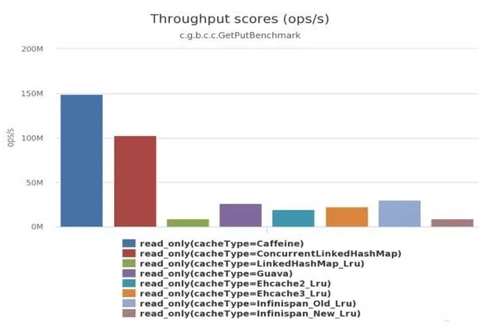
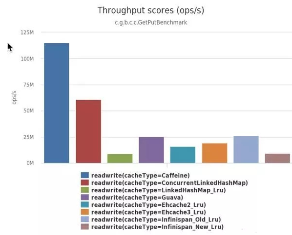
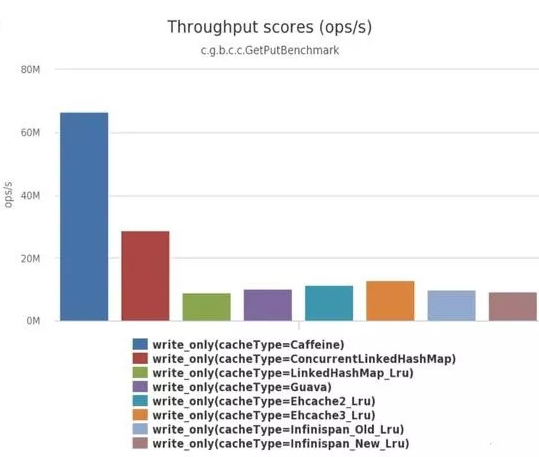
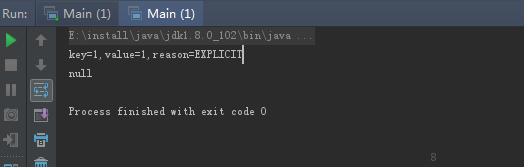

<!DOCTYPE html>
<html>
<head><meta name="generator" content="Hexo 3.9.0">
  <meta charset="utf-8">
  

  
  <title>Hexo</title>
  <meta name="viewport" content="width=device-width, initial-scale=1, maximum-scale=1">
  <meta property="og:type" content="website">
<meta property="og:title" content="Hexo">
<meta property="og:url" content="https://zzy896.github.io/my-blogs/index.html">
<meta property="og:site_name" content="Hexo">
<meta property="og:locale" content="default">
<meta name="twitter:card" content="summary">
<meta name="twitter:title" content="Hexo">
  
    <link rel="alternate" href="/my-blogs/atom.xml" title="Hexo" type="application/atom+xml">
  
  
    <link rel="icon" href="/favicon.png">
  
  
    <link href="//fonts.googleapis.com/css?family=Source+Code+Pro" rel="stylesheet" type="text/css">
  
  <link rel="stylesheet" href="/my-blogs/css/style.css">
</head>
</html>
<body>
  <div id="container">
    <div id="wrap">
      <header id="header">
  <div id="banner"></div>
  <div id="header-outer" class="outer">
    <div id="header-title" class="inner">
      <h1 id="logo-wrap">
        <a href="/my-blogs/" id="logo">Hexo</a>
      </h1>
      
    </div>
    <div id="header-inner" class="inner">
      <nav id="main-nav">
        <a id="main-nav-toggle" class="nav-icon"></a>
        
          <a class="main-nav-link" href="/my-blogs/">Home</a>
        
          <a class="main-nav-link" href="/my-blogs/archives">Archives</a>
        
      </nav>
      <nav id="sub-nav">
        
          <a id="nav-rss-link" class="nav-icon" href="/my-blogs/atom.xml" title="RSS Feed"></a>
        
        <a id="nav-search-btn" class="nav-icon" title="Search"></a>
      </nav>
      <div id="search-form-wrap">
        <form action="//google.com/search" method="get" accept-charset="UTF-8" class="search-form"><input type="search" name="q" class="search-form-input" placeholder="Search"><button type="submit" class="search-form-submit">&#xF002;</button><input type="hidden" name="sitesearch" value="https://zzy896.github.io/my-blogs"></form>
      </div>
    </div>
  </div>
</header>
      <div class="outer">
        <section id="main">
  
    <article id="post-guava之Immutable集合操作" class="article article-type-post" itemscope itemprop="blogPost">
  <div class="article-meta">
    <a href="/my-blogs/2020/01/01/guava之Immutable集合操作/" class="article-date">
  <time datetime="2020-01-01T01:58:29.000Z" itemprop="datePublished">2020-01-01</time>
</a>
    
  </div>
  <div class="article-inner">
    
    
      <header class="article-header">
        
  
    <h1 itemprop="name">
      <a class="article-title" href="/my-blogs/2020/01/01/guava之Immutable集合操作/">guava之Immutable集合操作</a>
    </h1>
  

      </header>
    
    <div class="article-entry" itemprop="articleBody">
      
        <p><strong><em>guava是google的一个库，弥补了java语言的很多方面的不足，很多在java8中已有实现，暂时不展开。Collections是jdk提供的一个工具类。</em></strong><br><strong>1、JDK中实现immutable集合</strong><br>在JDK中提供了Collections.unmodifiableXXX系列方法来实现不可变集合, 但是存在一些问题，下面我们先看一个具体实例：<br><figure class="highlight bash"><table><tr><td class="gutter"><pre><span class="line">1</span><br><span class="line">2</span><br><span class="line">3</span><br><span class="line">4</span><br><span class="line">5</span><br><span class="line">6</span><br><span class="line">7</span><br><span class="line">8</span><br><span class="line">9</span><br><span class="line">10</span><br><span class="line">11</span><br><span class="line">12</span><br><span class="line">13</span><br><span class="line">14</span><br><span class="line">15</span><br><span class="line">16</span><br><span class="line">17</span><br><span class="line">18</span><br><span class="line">19</span><br><span class="line">20</span><br><span class="line">21</span><br><span class="line">22</span><br><span class="line">23</span><br><span class="line">24</span><br></pre></td><td class="code"><pre><span class="line">public class ImmutableTest &#123;</span><br><span class="line"></span><br><span class="line">    @Test</span><br><span class="line">    public void <span class="function"><span class="title">testJDKImmutable</span></span>()&#123;</span><br><span class="line">        List&lt;String&gt; list=new ArrayList&lt;String&gt;();</span><br><span class="line">        list.add(<span class="string">"a"</span>);</span><br><span class="line">        list.add(<span class="string">"b"</span>);</span><br><span class="line">        list.add(<span class="string">"c"</span>);</span><br><span class="line"></span><br><span class="line">        //通过list创建一个不可变的unmodifiableList集合</span><br><span class="line">        List&lt;String&gt; unmodifiableList=Collections.unmodifiableList(list);</span><br><span class="line">        System.out.println(unmodifiableList);</span><br><span class="line"></span><br><span class="line">        //通过list添加元素</span><br><span class="line">        list.add(<span class="string">"ddd"</span>);</span><br><span class="line">        System.out.println(<span class="string">"往list添加一个元素:"</span>+list);</span><br><span class="line">        System.out.println(<span class="string">"通过list添加元素之后的unmodifiableList:"</span>+unmodifiableList);</span><br><span class="line"></span><br><span class="line">        //通过unmodifiableList添加元素</span><br><span class="line">        unmodifiableList.add(<span class="string">"eee"</span>);</span><br><span class="line">        System.out.println(<span class="string">"往unmodifiableList添加一个元素:"</span>+unmodifiableList);</span><br><span class="line"></span><br><span class="line">    &#125;</span><br><span class="line">&#125;</span><br></pre></td></tr></table></figure></p>
<p>运行结果：<br><figure class="highlight bash"><table><tr><td class="gutter"><pre><span class="line">1</span><br><span class="line">2</span><br><span class="line">3</span><br><span class="line">4</span><br><span class="line">5</span><br><span class="line">6</span><br><span class="line">7</span><br><span class="line">8</span><br><span class="line">9</span><br><span class="line">10</span><br><span class="line">11</span><br><span class="line">12</span><br></pre></td><td class="code"><pre><span class="line"></span><br><span class="line">2</span><br><span class="line">3</span><br><span class="line">4</span><br><span class="line">5</span><br><span class="line">6</span><br><span class="line">[a,b,c]</span><br><span class="line">往list添加一个元素:[a,b,c,ddd]</span><br><span class="line">通过list添加元素之后的unmodifiableList:[a,b,c,ddd]</span><br><span class="line"></span><br><span class="line">java.lang.UnsupportedOperationException </span><br><span class="line">      at java.util.Collections<span class="variable">$UnmodifiableCollection</span>.add(Collections.java:1055)</span><br></pre></td></tr></table></figure></p>
<p>通过运行结果我们可以看出：虽然unmodifiableList不可以直接添加元素，但是我的list是可以添加元素的，而list的改变也会使unmodifiableList改变。<br>所以说Collections.unmodifiableList实现的不是真正的不可变集合。</p>
<p><strong>2、Guava的immutable集合</strong><br>Guava提供了对JDK里标准集合类里的immutable版本的简单方便的实现，以及Guava自己的一些专门集合类的immutable实现。当你不希望修改一个集合类，<br>或者想做一个常量集合类的时候，使用immutable集合类就是一个最佳的编程实践。</p>
<p>注意：每个Guava immutable集合类的实现都拒绝null值。我们做过对Google内部代码的全面的调查，并且发现只有5%的情况下集合类允许null值，而95%的情况下<br>都拒绝null值。万一你真的需要能接受null值的集合类，你可以考虑用Collections.unmodifiableXXX。<br>immutable集合可以有以下几种方式来创建：<br>　　1、用copyOf方法, 譬如, ImmutableSet.copyOf(set)<br>　　2、使用of方法，譬如，ImmutableSet.of(“a”, “b”, “c”)或者ImmutableMap.of(“a”, 1, “b”, 2)<br>　　3、使用Builder类<br>举例：</p>
<figure class="highlight bash"><table><tr><td class="gutter"><pre><span class="line">1</span><br><span class="line">2</span><br><span class="line">3</span><br><span class="line">4</span><br><span class="line">5</span><br><span class="line">6</span><br><span class="line">7</span><br><span class="line">8</span><br><span class="line">9</span><br><span class="line">10</span><br><span class="line">11</span><br><span class="line">12</span><br><span class="line">13</span><br><span class="line">14</span><br><span class="line">15</span><br><span class="line">16</span><br><span class="line">17</span><br><span class="line">18</span><br><span class="line">19</span><br><span class="line">20</span><br><span class="line">21</span><br><span class="line">22</span><br><span class="line">23</span><br><span class="line">24</span><br><span class="line">25</span><br><span class="line">26</span><br><span class="line">27</span><br><span class="line">28</span><br><span class="line">29</span><br></pre></td><td class="code"><pre><span class="line">@Test</span><br><span class="line">   public void <span class="function"><span class="title">testGuavaImmutable</span></span>()&#123;</span><br><span class="line"></span><br><span class="line">       List&lt;String&gt; list=new ArrayList&lt;String&gt;();</span><br><span class="line">       list.add(<span class="string">"a"</span>);</span><br><span class="line">       list.add(<span class="string">"b"</span>);</span><br><span class="line">       list.add(<span class="string">"c"</span>);</span><br><span class="line"></span><br><span class="line">       ImmutableList&lt;String&gt; imlist=ImmutableList.copyOf(list);</span><br><span class="line">       System.out.println(<span class="string">"imlist："</span>+imlist);</span><br><span class="line"></span><br><span class="line">       ImmutableList&lt;String&gt; imOflist=ImmutableList.of(<span class="string">"peida"</span>,<span class="string">"jerry"</span>,<span class="string">"harry"</span>);</span><br><span class="line">       System.out.println(<span class="string">"imOflist："</span>+imOflist);</span><br><span class="line"></span><br><span class="line">       ImmutableSortedSet&lt;String&gt; imSortList=ImmutableSortedSet.of(<span class="string">"a"</span>, <span class="string">"b"</span>, <span class="string">"c"</span>, <span class="string">"a"</span>, <span class="string">"d"</span>, <span class="string">"b"</span>);</span><br><span class="line">       System.out.println(<span class="string">"imSortList："</span>+imSortList);</span><br><span class="line"></span><br><span class="line">       list.add(<span class="string">"baby"</span>);</span><br><span class="line">       //关键看这里是否imlist也添加新元素了</span><br><span class="line">       System.out.println(<span class="string">"list添加新元素之后看imlist:"</span>+imlist);</span><br><span class="line"></span><br><span class="line">       ImmutableSet&lt;Color&gt; imColorSet =</span><br><span class="line">               ImmutableSet.&lt;Color&gt;builder()</span><br><span class="line">                       .add(new Color(0, 255, 255))</span><br><span class="line">                       .add(new Color(0, 191, 255))</span><br><span class="line">                       .build();</span><br><span class="line"></span><br><span class="line">       System.out.println(<span class="string">"imColorSet:"</span>+imColorSet);</span><br><span class="line">   &#125;</span><br></pre></td></tr></table></figure>
<p>运行结果：发现imlist并未改变。<br><figure class="highlight bash"><table><tr><td class="gutter"><pre><span class="line">1</span><br><span class="line">2</span><br><span class="line">3</span><br><span class="line">4</span><br><span class="line">5</span><br></pre></td><td class="code"><pre><span class="line">mlist:[a,b,c]</span><br><span class="line">imOflist:[peida,jerry,harry]</span><br><span class="line">imSortList:[a,b,c,d]</span><br><span class="line">list添加新元素之后看imlist:[a,b,c]</span><br><span class="line">imColorSet:[java.awt.Color[r=0,g=255,b=255],java.awt.Color[r=0,g=191,b=255]]</span><br></pre></td></tr></table></figure></p>
<p>对于排序的集合来说有例外，因为元素的顺序在构建集合的时候就被固定下来了。譬如，ImmutableSet.of(“a”, “b”, “c”, “a”, “d”, “b”)，对于这个集合的遍历顺序来说就是”a”, “b”, “c”, “d”。<br>更智能的copyOf<br>copyOf方法比你想象的要智能，ImmutableXXX.copyOf会在合适的情况下避免拷贝元素的操作－先忽略具体的细节，但是它的实现一般都是很“智能”的。譬如：</p>
<figure class="highlight bash"><table><tr><td class="gutter"><pre><span class="line">1</span><br><span class="line">2</span><br><span class="line">3</span><br><span class="line">4</span><br><span class="line">5</span><br><span class="line">6</span><br><span class="line">7</span><br><span class="line">8</span><br><span class="line">9</span><br><span class="line">10</span><br><span class="line">11</span><br><span class="line">12</span><br><span class="line">13</span><br><span class="line">14</span><br><span class="line">15</span><br><span class="line">16</span><br><span class="line">17</span><br><span class="line">18</span><br><span class="line">19</span><br><span class="line">20</span><br><span class="line">21</span><br><span class="line">22</span><br></pre></td><td class="code"><pre><span class="line">@Test</span><br><span class="line">        public void <span class="function"><span class="title">testCotyOf</span></span>()&#123;</span><br><span class="line">            ImmutableSet&lt;String&gt; imSet=ImmutableSet.of(<span class="string">"peida"</span>,<span class="string">"jerry"</span>,<span class="string">"harry"</span>,<span class="string">"lisa"</span>);</span><br><span class="line">            System.out.println(<span class="string">"imSet："</span>+imSet);</span><br><span class="line"></span><br><span class="line">            //<span class="built_in">set</span>直接转list</span><br><span class="line">            ImmutableList&lt;String&gt; imlist=ImmutableList.copyOf(imSet);</span><br><span class="line">            System.out.println(<span class="string">"imlist："</span>+imlist);</span><br><span class="line"></span><br><span class="line">            //list直接转SortedSet</span><br><span class="line">            ImmutableSortedSet&lt;String&gt; imSortSet=ImmutableSortedSet.copyOf(imSet);</span><br><span class="line">            System.out.println(<span class="string">"imSortSet："</span>+imSortSet);</span><br><span class="line"></span><br><span class="line">            List&lt;String&gt; list=new ArrayList&lt;String&gt;();</span><br><span class="line">            <span class="keyword">for</span>(int i=0;i&lt;=10;i++)&#123;</span><br><span class="line">                list.add(i+<span class="string">"x"</span>);</span><br><span class="line">            &#125;</span><br><span class="line">            System.out.println(<span class="string">"list："</span>+list);</span><br><span class="line"></span><br><span class="line">            //截取集合部分元素</span><br><span class="line">            ImmutableList&lt;String&gt; imInfolist=ImmutableList.copyOf(list.subList(2, 8));</span><br><span class="line">            System.out.println(<span class="string">"imInfolist："</span>+imInfolist);</span><br></pre></td></tr></table></figure>
<p>运行结果</p>
<figure class="highlight bash"><table><tr><td class="gutter"><pre><span class="line">1</span><br><span class="line">2</span><br><span class="line">3</span><br><span class="line">4</span><br><span class="line">5</span><br></pre></td><td class="code"><pre><span class="line">imSet:[peida,jerry,harry,lisa]</span><br><span class="line">imlist:[peida,jerry,harry,lisa]</span><br><span class="line">imSortSet:[harry,jerry,lisa,peida]</span><br><span class="line">list:[0x,1x,2x,3x,4x,5x,6x,7x,8x,9x,10x]</span><br><span class="line">imInfoList:[2x,3x,4x,5x,6x,7x]</span><br></pre></td></tr></table></figure>
<p>Guava集合和不可变对应关系<br><figure class="highlight bash"><table><tr><td class="gutter"><pre><span class="line">1</span><br><span class="line">2</span><br><span class="line">3</span><br><span class="line">4</span><br><span class="line">5</span><br><span class="line">6</span><br><span class="line">7</span><br><span class="line">8</span><br><span class="line">9</span><br><span class="line">10</span><br><span class="line">11</span><br><span class="line">12</span><br><span class="line">13</span><br><span class="line">14</span><br><span class="line">15</span><br></pre></td><td class="code"><pre><span class="line">可变集合类型               可变集合源：JDK or Guava?         Guava不可变集合</span><br><span class="line">Collection                       JDK                         ImmutableCollection</span><br><span class="line">List                             JDK                         ImmutableList</span><br><span class="line">Set                              JDK                         ImmutableSet</span><br><span class="line">SortedSet/NavigableSet           JDK                         ImmutableSortedSet</span><br><span class="line">Map                              JDK                         ImmutableMap</span><br><span class="line">SortedMap                        JDK                         ImmutableSortedMap</span><br><span class="line">Multiset                         Guava                       ImmutableMultiset</span><br><span class="line">SortedMultiset                   Guava                       ImmutableSortedMultiset</span><br><span class="line">Multimap                         Guava                       ImmutableMultimap</span><br><span class="line">ListMultimap                     Guava                       ImmutableListMultimap</span><br><span class="line">SetMultimap                      Guava                       ImmutableSetMultimap</span><br><span class="line">BiMap                            Guava                       ImmutableBiMap</span><br><span class="line">ClassToInstanceMap               Guava                       ImmutableClassToInstanceMap</span><br><span class="line">Table                            Guava                       ImmutableTable</span><br></pre></td></tr></table></figure></p>

      
    </div>
    <footer class="article-footer">
      <a data-url="https://zzy896.github.io/my-blogs/2020/01/01/guava之Immutable集合操作/" data-id="ck4unvo810004pgssup26nron" class="article-share-link">Share</a>
      
      
    </footer>
  </div>
  
</article>


  
    <article id="post-Lookup注解使用" class="article article-type-post" itemscope itemprop="blogPost">
  <div class="article-meta">
    <a href="/my-blogs/2019/09/25/Lookup注解使用/" class="article-date">
  <time datetime="2019-09-25T07:24:58.000Z" itemprop="datePublished">2019-09-25</time>
</a>
    
  </div>
  <div class="article-inner">
    
    
      <header class="article-header">
        
  
    <h1 itemprop="name">
      <a class="article-title" href="/my-blogs/2019/09/25/Lookup注解使用/">spring方法注入@Lookup注解使用</a>
    </h1>
  

      </header>
    
    <div class="article-entry" itemprop="articleBody">
      
        <p>##情景分析<br>在Spring的诸多应用场景中bean都是单例形式，当一个单利bean需要和一个非单利bean组合使用或者一个非单利bean和另一个非单利bean组合使用时，我们通常都是将依赖以属性的方式放到bean中来引用，然后以@Autowired来标记需要注入的属性。但是这种方式在bean的生命周期不同时将会出现很明显的问题，假设单利bean A需要一个非单利bean B（原型），我们在A中注入bean B，每次调用bean A中的方法时都会用到bean B，我们知道Spring Ioc容器只在容器初始化时执行一次，也就是bean A中的依赖bean B只有一次注入的机会，但是实际上bean B我们需要的是每次调用方法时都获取一个新的对象（原型）所以问题明显就是：我们需要bean B是一个原型bean，而事实上bean B的依赖只注入了一次变成了事实上的单利bean。</p>
<p>###代码说明<br><figure class="highlight bash"><table><tr><td class="gutter"><pre><span class="line">1</span><br><span class="line">2</span><br><span class="line">3</span><br><span class="line">4</span><br><span class="line">5</span><br><span class="line">6</span><br><span class="line">7</span><br><span class="line">8</span><br><span class="line">9</span><br><span class="line">10</span><br><span class="line">11</span><br><span class="line">12</span><br><span class="line">13</span><br><span class="line">14</span><br><span class="line">15</span><br><span class="line">16</span><br><span class="line">17</span><br><span class="line">18</span><br><span class="line">19</span><br><span class="line">20</span><br><span class="line">21</span><br><span class="line">22</span><br><span class="line">23</span><br><span class="line">24</span><br><span class="line">25</span><br><span class="line">26</span><br><span class="line">27</span><br><span class="line">28</span><br><span class="line">29</span><br><span class="line">30</span><br><span class="line">31</span><br><span class="line">32</span><br><span class="line">33</span><br><span class="line">34</span><br><span class="line">35</span><br><span class="line">36</span><br><span class="line">37</span><br><span class="line">38</span><br><span class="line">39</span><br></pre></td><td class="code"><pre><span class="line">@Component</span><br><span class="line">@Scope(<span class="string">"prototype"</span>)</span><br><span class="line">public class PrototypeBean &#123;</span><br><span class="line">    private static final Logger logger= LoggerFactory.getLogger(PrototypeBean.class);</span><br><span class="line">    </span><br><span class="line">    public void <span class="function"><span class="title">say</span></span>() &#123;</span><br><span class="line">        logger.info(<span class="string">"say something..."</span>);</span><br><span class="line">    &#125;</span><br><span class="line">&#125;</span><br><span class="line">@Component</span><br><span class="line">public class SingletonBean &#123;</span><br><span class="line">    private static final Logger logger = LoggerFactory.getLogger(SingletonBean.class);</span><br><span class="line">    </span><br><span class="line">    @Autowired</span><br><span class="line">    private PrototypeBean bean;</span><br><span class="line">    </span><br><span class="line">    public void <span class="function"><span class="title">print</span></span>() &#123;</span><br><span class="line">        logger.info(<span class="string">"Bean SingletonBean's HashCode : &#123;&#125;"</span>,bean.hashCode());</span><br><span class="line">        bean.say();</span><br><span class="line">    &#125;</span><br><span class="line">&#125;</span><br><span class="line">@SpringBootApplication</span><br><span class="line">public class SampleApplication &#123;</span><br><span class="line">    private static final Logger logger = LoggerFactory.getLogger(SampleApplication.class);</span><br><span class="line">    public static void main(String[] args) &#123;</span><br><span class="line">        SpringApplication.run(SampleApplication.class, args);</span><br><span class="line">    &#125;</span><br><span class="line"></span><br><span class="line">    @Bean public CommandLineRunner <span class="built_in">test</span>(final SingletonBean bean) &#123;</span><br><span class="line">        <span class="built_in">return</span> (args)-&gt; &#123;</span><br><span class="line">            logger.info(<span class="string">"测试单例bean和原型bean的调用"</span>);</span><br><span class="line">            int i =0;</span><br><span class="line">            <span class="keyword">while</span>(i&lt;3) &#123;</span><br><span class="line">                i++;</span><br><span class="line">                bean.print();</span><br><span class="line">            &#125;</span><br><span class="line">        &#125;;</span><br><span class="line">    &#125;</span><br><span class="line">&#125;</span><br></pre></td></tr></table></figure></p>
<p>##结果<br><figure class="highlight bash"><table><tr><td class="gutter"><pre><span class="line">1</span><br><span class="line">2</span><br><span class="line">3</span><br><span class="line">4</span><br><span class="line">5</span><br><span class="line">6</span><br><span class="line">7</span><br></pre></td><td class="code"><pre><span class="line">2019-09-25 15:04:29,721 INFO :-- [main .. ] o.s.SampleApplication 测试单例bean和原型bean的调用 </span><br><span class="line">2019-09-25 15:04:29,723 INFO :-- [main .. ] o.s.a.SingletonBean Bean SingletonBean<span class="string">'s HashCode : 1713129148 </span></span><br><span class="line"><span class="string">2019-09-25 15:04:29,723 INFO :-- [main .. ] o.s.a.PrototypeBean say something... </span></span><br><span class="line"><span class="string">2019-09-25 15:04:29,723 INFO :-- [main .. ] o.s.a.SingletonBean Bean SingletonBean'</span>s HashCode : 1713129148 </span><br><span class="line">2019-09-25 15:04:29,724 INFO :-- [main .. ] o.s.a.PrototypeBean say something... </span><br><span class="line">2019-09-25 15:04:29,724 INFO :-- [main .. ] o.s.a.SingletonBean Bean SingletonBean<span class="string">'s HashCode : 1713129148 </span></span><br><span class="line"><span class="string">2019-09-25 15:04:29,724 INFO :-- [main .. ] o.s.a.PrototypeBean say something...</span></span><br></pre></td></tr></table></figure></p>
<p>我们看到每次输出PrototypeBean的HashCode都是一样的，证明我们实际上并没有达到使用原型bean的目的。</p>
<p>###解决方案<br>1、在bean A中引入ApplicationContext每次调用方法时用上下文的getBean(name,class)方法去重新获取bean B的实例。<br>2、使用@Lookup注解。<br>这两种解决方案都能解决我们遇到的问题，但是第二种相对而言更简单。以下给出两种解决方案的代码示例。</p>
<p>###通过应用上下文ApplicationContext获取获取<br><figure class="highlight bash"><table><tr><td class="gutter"><pre><span class="line">1</span><br><span class="line">2</span><br><span class="line">3</span><br><span class="line">4</span><br><span class="line">5</span><br><span class="line">6</span><br><span class="line">7</span><br><span class="line">8</span><br><span class="line">9</span><br><span class="line">10</span><br><span class="line">11</span><br><span class="line">12</span><br><span class="line">13</span><br><span class="line">14</span><br><span class="line">15</span><br><span class="line">16</span><br><span class="line">17</span><br><span class="line">18</span><br><span class="line">19</span><br><span class="line">20</span><br><span class="line">21</span><br></pre></td><td class="code"><pre><span class="line">@Component</span><br><span class="line">public class SingletonBean &#123;</span><br><span class="line">    private static final Logger logger = LoggerFactory.getLogger(SingletonBean.class);</span><br><span class="line">    </span><br><span class="line">    @Autowired</span><br><span class="line">    private ApplicationContext context;</span><br><span class="line">    </span><br><span class="line">    public void <span class="function"><span class="title">print</span></span>() &#123;</span><br><span class="line">        PrototypeBean bean = getFromApplicationContext();</span><br><span class="line">        logger.info(<span class="string">"Bean SingletonBean's HashCode : &#123;&#125;"</span>,bean.hashCode());</span><br><span class="line">        bean.say();</span><br><span class="line">    &#125;</span><br><span class="line">    </span><br><span class="line">    /**</span><br><span class="line">     * 每次都从ApplicatonContext中获取新的bean引用</span><br><span class="line">     * @<span class="built_in">return</span> PrototypeBean instance</span><br><span class="line">     */</span><br><span class="line">    PrototypeBean <span class="function"><span class="title">getFromApplicationContext</span></span>() &#123;</span><br><span class="line">        <span class="built_in">return</span> this.context.getBean(<span class="string">"prototypeBean"</span>,PrototypeBean.class);</span><br><span class="line">    &#125;</span><br><span class="line">&#125;</span><br></pre></td></tr></table></figure></p>
<p>###结果<br><figure class="highlight bash"><table><tr><td class="gutter"><pre><span class="line">1</span><br><span class="line">2</span><br><span class="line">3</span><br><span class="line">4</span><br><span class="line">5</span><br><span class="line">6</span><br><span class="line">7</span><br></pre></td><td class="code"><pre><span class="line">2019-09-25 15:10:01,485 INFO :-- [main .. ] o.s.SampleApplication 测试单例bean和原型bean的调用 </span><br><span class="line">2019-09-25 15:10:01,487 INFO :-- [main .. ] o.s.a.SingletonBean Bean SingletonBean<span class="string">'s HashCode : 376601041 </span></span><br><span class="line"><span class="string">2019-09-25 15:10:01,487 INFO :-- [main .. ] o.s.a.PrototypeBean say something... </span></span><br><span class="line"><span class="string">2019-09-25 15:10:01,487 INFO :-- [main .. ] o.s.a.SingletonBean Bean SingletonBean'</span>s HashCode : 2056499811 </span><br><span class="line">2019-09-25 15:10:01,487 INFO :-- [main .. ] o.s.a.PrototypeBean say something... </span><br><span class="line">2019-09-25 15:10:01,488 INFO :-- [main .. ] o.s.a.SingletonBean Bean SingletonBean<span class="string">'s HashCode : 890733699 </span></span><br><span class="line"><span class="string">2019-09-25 15:10:01,488 INFO :-- [main .. ] o.s.a.PrototypeBean say something...</span></span><br></pre></td></tr></table></figure></p>
<p>我们看到每次我们调用print()方法时都会重新从应用上下文获取新的引用，达到了使用原型的目的。</p>
<p>###通过@Lookup注解实现方法注入<br>使用方法注入的方法需要满足以下语法要求</p>
<figure class="highlight bash"><table><tr><td class="gutter"><pre><span class="line">1</span><br></pre></td><td class="code"><pre><span class="line">&lt;public|protected&gt; [abstract] &lt;<span class="built_in">return</span>-type&gt; theMethodName(no-arguments);</span><br></pre></td></tr></table></figure>
<figure class="highlight bash"><table><tr><td class="gutter"><pre><span class="line">1</span><br><span class="line">2</span><br><span class="line">3</span><br><span class="line">4</span><br><span class="line">5</span><br><span class="line">6</span><br><span class="line">7</span><br><span class="line">8</span><br><span class="line">9</span><br><span class="line">10</span><br><span class="line">11</span><br><span class="line">12</span><br><span class="line">13</span><br></pre></td><td class="code"><pre><span class="line">@Component</span><br><span class="line">public abstract class SingletonBean &#123;</span><br><span class="line">    private static final Logger logger = LoggerFactory.getLogger(SingletonBean.class);</span><br><span class="line">    </span><br><span class="line">    public void <span class="function"><span class="title">print</span></span>() &#123;</span><br><span class="line">        PrototypeBean bean = methodInject();</span><br><span class="line">        logger.info(<span class="string">"Bean SingletonBean's HashCode : &#123;&#125;"</span>,bean.hashCode());</span><br><span class="line">        bean.say();</span><br><span class="line">    &#125;</span><br><span class="line">    // 也可以写成 @Lookup(<span class="string">"prototypeBean"</span>) 来指定需要注入的bean</span><br><span class="line">    @Lookup</span><br><span class="line">    protected abstract PrototypeBean methodInject();</span><br><span class="line">&#125;</span><br></pre></td></tr></table></figure>
<p>结果</p>
<figure class="highlight bash"><table><tr><td class="gutter"><pre><span class="line">1</span><br><span class="line">2</span><br><span class="line">3</span><br><span class="line">4</span><br><span class="line">5</span><br><span class="line">6</span><br><span class="line">7</span><br></pre></td><td class="code"><pre><span class="line">2019-09-25 15:18:50,105 INFO :-- [main .. ] o.s.SampleApplication 测试单例bean和原型bean的调用 </span><br><span class="line">2019-09-25 15:18:50,108 INFO :-- [main .. ] o.s.a.SingletonBean Bean SingletonBean<span class="string">'s HashCode : 1349373781 </span></span><br><span class="line"><span class="string">2019-09-25 15:18:50,108 INFO :-- [main .. ] o.s.a.PrototypeBean say something... </span></span><br><span class="line"><span class="string">2019-09-25 15:18:50,108 INFO :-- [main .. ] o.s.a.SingletonBean Bean SingletonBean'</span>s HashCode : 1046820071 </span><br><span class="line">2019-09-25 15:18:50,109 INFO :-- [main .. ] o.s.a.PrototypeBean say something... </span><br><span class="line">2019-09-25 15:18:50,109 INFO :-- [main .. ] o.s.a.SingletonBean Bean SingletonBean<span class="string">'s HashCode : 1722645488 </span></span><br><span class="line"><span class="string">2019-09-25 15:18:50,110 INFO :-- [main .. ] o.s.a.PrototypeBean say something...</span></span><br></pre></td></tr></table></figure>
      
    </div>
    <footer class="article-footer">
      <a data-url="https://zzy896.github.io/my-blogs/2019/09/25/Lookup注解使用/" data-id="ck4unvo7u0001pgssduu787vm" class="article-share-link">Share</a>
      
      
    </footer>
  </div>
  
</article>


  
    <article id="post-事务" class="article article-type-post" itemscope itemprop="blogPost">
  <div class="article-meta">
    <a href="/my-blogs/2019/09/02/事务/" class="article-date">
  <time datetime="2019-09-02T01:39:40.000Z" itemprop="datePublished">2019-09-02</time>
</a>
    
  </div>
  <div class="article-inner">
    
    
      <header class="article-header">
        
  
    <h1 itemprop="name">
      <a class="article-title" href="/my-blogs/2019/09/02/事务/">事务</a>
    </h1>
  

      </header>
    
    <div class="article-entry" itemprop="articleBody">
      
        <p><strong><strong>Read Uncommitted</strong></strong><br>Read Uncommitted是隔离级别最低的一种事务级别。在这种隔离级别下，一个事务会读到另一个事务更新后但未提交的数据，如果另一个事务回滚，那么当前事务读到的数据就是脏数据，这就是脏读（Dirty Read）。<br>我们来看一个例子。<br>首先，我们准备好students表的数据，该表仅一行记录：<br><figure class="highlight bash"><table><tr><td class="gutter"><pre><span class="line">1</span><br><span class="line">2</span><br><span class="line">3</span><br><span class="line">4</span><br><span class="line">5</span><br><span class="line">6</span><br><span class="line">7</span><br></pre></td><td class="code"><pre><span class="line">mysql&gt; select * from students;</span><br><span class="line">+----+-------+</span><br><span class="line">| id | name  |</span><br><span class="line">+----+-------+</span><br><span class="line">|  1 | Alice |</span><br><span class="line">+----+-------+</span><br><span class="line">1 row <span class="keyword">in</span> <span class="built_in">set</span> (0.00 sec)</span><br></pre></td></tr></table></figure></p>
<p>然后，分别开启两个MySQL客户端连接，按顺序依次执行事务A和事务B：<br><figure class="highlight bash"><table><tr><td class="gutter"><pre><span class="line">1</span><br><span class="line">2</span><br><span class="line">3</span><br><span class="line">4</span><br><span class="line">5</span><br><span class="line">6</span><br><span class="line">7</span><br><span class="line">8</span><br></pre></td><td class="code"><pre><span class="line">时刻      事务A                                                        事务B</span><br><span class="line">1       SET TRANSACTION ISOLATION LEVEL READ UNCOMMITTED;          SET TRANSACTION ISOLATION LEVEL READ UNCOMMITTED;</span><br><span class="line">2       BEGIN;                                                     BEGIN;</span><br><span class="line">3       UPDATE students SET name = <span class="string">'Bob'</span> WHERE id = 1;</span><br><span class="line">4                                                                  SELECT * FROM students WHERE id = 1;</span><br><span class="line">5       ROLLBACK; </span><br><span class="line">6                                                                  SELECT * FROM students WHERE id = 1;</span><br><span class="line">7                                                                  COMMIT;</span><br></pre></td></tr></table></figure></p>
<p>当事务A执行完第3步时，它更新了id=1的记录，但并未提交，而事务B在第4步读取到的数据就是未提交的数据。<br>随后，事务A在第5步进行了回滚，事务B再次读取id=1的记录，发现和上一次读取到的数据不一致，这就是脏读。<br>可见，在Read Uncommitted隔离级别下，一个事务可能读取到另一个事务更新但未提交的数据，这个数据有可能是脏数据。</p>
<p><strong><strong>Read Committed</strong></strong><br>在Read Committed隔离级别下，一个事务可能会遇到不可重复读（Non Repeatable Read）的问题。<br>不可重复读是指，在一个事务内，多次读同一数据，在这个事务还没有结束时，如果另一个事务恰好修改了这个数据，那么，在第一个事务中，两次读取的数据就可能不一致。<br>我们仍然先准备好students表的数据：<br><figure class="highlight bash"><table><tr><td class="gutter"><pre><span class="line">1</span><br><span class="line">2</span><br><span class="line">3</span><br><span class="line">4</span><br><span class="line">5</span><br><span class="line">6</span><br><span class="line">7</span><br></pre></td><td class="code"><pre><span class="line">mysql&gt; select * from students;</span><br><span class="line">+----+-------+</span><br><span class="line">| id | name  |</span><br><span class="line">+----+-------+</span><br><span class="line">|  1 | Alice |</span><br><span class="line">+----+-------+</span><br><span class="line">1 row <span class="keyword">in</span> <span class="built_in">set</span> (0.00 sec)</span><br></pre></td></tr></table></figure></p>
<p>然后，分别开启两个MySQL客户端连接，按顺序依次执行事务A和事务B：<br><figure class="highlight bash"><table><tr><td class="gutter"><pre><span class="line">1</span><br><span class="line">2</span><br><span class="line">3</span><br><span class="line">4</span><br><span class="line">5</span><br><span class="line">6</span><br><span class="line">7</span><br><span class="line">8</span><br></pre></td><td class="code"><pre><span class="line">时刻      事务A                                                        事务B</span><br><span class="line">1       SET TRANSACTION ISOLATION LEVEL READ COMMITTED;            SET TRANSACTION ISOLATION LEVEL READ COMMITTED;</span><br><span class="line">2       BEGIN;                                                     BEGIN;</span><br><span class="line">3                                                                  SELECT * FROM students WHERE id = 1;</span><br><span class="line">4       UPDATE students SET name = <span class="string">'Bob'</span> WHERE id = 1;                                                          </span><br><span class="line">5       COMMIT; </span><br><span class="line">6                                                                  SELECT * FROM students WHERE id = 1;</span><br><span class="line">7                                                                  COMMIT;</span><br></pre></td></tr></table></figure></p>
<p> 当事务B第一次执行第3步的查询时，得到的结果是Alice，随后，由于事务A在第4步更新了这条记录并提交，所以，事务B在第6步再次执行同样的查询时，得到的结果就变成了Bob，因此，在Read Committed隔离级别下，事务不可重复读同一条记录，因为很可能读到的结果不一致。</p>
<p><strong><strong>Repeatable Read</strong></strong><br>在Repeatable Read隔离级别下，一个事务可能会遇到幻读（Phantom Read）的问题。<br>幻读是指，在一个事务中，第一次查询某条记录，发现没有，但是，当试图更新这条不存在的记录时，竟然能成功，并且，再次读取同一条记录，它就神奇地出现了。<br>我们仍然先准备好students表的数据：<br><figure class="highlight bash"><table><tr><td class="gutter"><pre><span class="line">1</span><br><span class="line">2</span><br><span class="line">3</span><br><span class="line">4</span><br><span class="line">5</span><br><span class="line">6</span><br><span class="line">7</span><br></pre></td><td class="code"><pre><span class="line">mysql&gt; select * from students;</span><br><span class="line">+----+-------+</span><br><span class="line">| id | name  |</span><br><span class="line">+----+-------+</span><br><span class="line">|  1 | Alice |</span><br><span class="line">+----+-------+</span><br><span class="line">1 row <span class="keyword">in</span> <span class="built_in">set</span> (0.00 sec)</span><br></pre></td></tr></table></figure></p>
<p>然后，分别开启两个MySQL客户端连接，按顺序依次执行事务A和事务B：<br><figure class="highlight bash"><table><tr><td class="gutter"><pre><span class="line">1</span><br><span class="line">2</span><br><span class="line">3</span><br><span class="line">4</span><br><span class="line">5</span><br><span class="line">6</span><br><span class="line">7</span><br><span class="line">8</span><br><span class="line">9</span><br><span class="line">10</span><br></pre></td><td class="code"><pre><span class="line">时刻      事务A                                                        事务B</span><br><span class="line">1       SET TRANSACTION ISOLATION LEVEL REPEATABLE READ;            SET TRANSACTION ISOLATION LEVEL REPEATABLE READ;</span><br><span class="line">2       BEGIN;                                                      BEGIN;</span><br><span class="line">3                                                                   SELECT * FROM students WHERE id = 99;</span><br><span class="line">4       INSERT INTO students (id, name) VALUES (99, <span class="string">'Bob'</span>);                                                          </span><br><span class="line">5       COMMIT; </span><br><span class="line">6                                                                  SELECT * FROM students WHERE id = 99;</span><br><span class="line">7                                                                  UPDATE students SET name = <span class="string">'Alice'</span> WHERE id = 99;</span><br><span class="line">8                                                                  SELECT * FROM students WHERE id = 99;</span><br><span class="line">9                                                                  COMMIT;</span><br></pre></td></tr></table></figure></p>
<p> 事务B在第3步第一次读取id=99的记录时，读到的记录为空，说明不存在id=99的记录。随后，事务A在第4步插入了一条id=99的记录并提交。事务B在第6步再次读取id=99的记录时，读到的记录仍然为空，但是，事务B在第7步试图更新这条不存在的记录时，竟然成功了，并且，事务B在第8步再次读取id=99的记录时，记录出现了。<br> 可见，幻读就是没有读到的记录，以为不存在，但其实是可以更新成功的，并且，更新成功后，再次读取，就出现了。</p>
<p> <strong><strong>Serializable</strong></strong><br> Serializable是最严格的隔离级别。在Serializable隔离级别下，所有事务按照次序依次执行，因此，脏读、不可重复读、幻读都不会出现。<br> 虽然Serializable隔离级别下的事务具有最高的安全性，但是，由于事务是串行执行，所以效率会大大下降，应用程序的性能会急剧降低。如果没有特别重要的情景，一般都不会使用Serializable隔离级别。<br> <strong>默认隔离级别</strong><br> 如果没有指定隔离级别，数据库就会使用默认的隔离级别。在MySQL中，如果使用InnoDB，默认的隔离级别是Repeatable Read。</p>

      
    </div>
    <footer class="article-footer">
      <a data-url="https://zzy896.github.io/my-blogs/2019/09/02/事务/" data-id="ck4unvo7z0003pgssqubz1cn5" class="article-share-link">Share</a>
      
      
    </footer>
  </div>
  
</article>


  
    <article id="post-实用SQL语句" class="article article-type-post" itemscope itemprop="blogPost">
  <div class="article-meta">
    <a href="/my-blogs/2019/09/02/实用SQL语句/" class="article-date">
  <time datetime="2019-09-02T01:05:20.000Z" itemprop="datePublished">2019-09-02</time>
</a>
    
  </div>
  <div class="article-inner">
    
    
      <header class="article-header">
        
  
    <h1 itemprop="name">
      <a class="article-title" href="/my-blogs/2019/09/02/实用SQL语句/">实用SQL语句</a>
    </h1>
  

      </header>
    
    <div class="article-entry" itemprop="articleBody">
      
        <p><strong>插入或替换</strong><br>如果我们希望插入一条新记录（INSERT），但如果记录已经存在，就先删除原记录，再插入新记录。此时，可以使用REPLACE语句，这样就不必先查询，再决定是否先删除再插入：</p>
<figure class="highlight bash"><table><tr><td class="gutter"><pre><span class="line">1</span><br></pre></td><td class="code"><pre><span class="line">REPLACE INTO students (id, class_id, name, gender, score) VALUES (1, 1, <span class="string">'小明'</span>, <span class="string">'F'</span>, 99);</span><br></pre></td></tr></table></figure>
<p>####若id=1的记录不存在，REPLACE语句将插入新记录，否则，当前id=1的记录将被删除，然后再插入新记录。</p>
<p><strong>插入或更新</strong><br>如果我们希望插入一条新记录（INSERT），但如果记录已经存在，就更新该记录，此时，可以使用INSERT INTO … ON DUPLICATE KEY UPDATE …语句：<br><figure class="highlight bash"><table><tr><td class="gutter"><pre><span class="line">1</span><br></pre></td><td class="code"><pre><span class="line">INSERT INTO students (id, class_id, name, gender, score) VALUES (1, 1, <span class="string">'小明'</span>, <span class="string">'F'</span>, 99) ON DUPLICATE KEY UPDATE name=<span class="string">'小明'</span>, gender=<span class="string">'F'</span>, score=99;</span><br></pre></td></tr></table></figure></p>
<p>####若id=1的记录不存在，INSERT语句将插入新记录，否则，当前id=1的记录将被更新，更新的字段由UPDATE指定。<br><strong>插入或忽略</strong><br>如果我们希望插入一条新记录（INSERT），但如果记录已经存在，就啥事也不干直接忽略，此时，可以使用INSERT IGNORE INTO …语句：<br><figure class="highlight bash"><table><tr><td class="gutter"><pre><span class="line">1</span><br></pre></td><td class="code"><pre><span class="line">INSERT IGNORE INTO students (id, class_id, name, gender, score) VALUES (1, 1, <span class="string">'小明'</span>, <span class="string">'F'</span>, 99);</span><br></pre></td></tr></table></figure></p>
<p>####若id=1的记录不存在，INSERT语句将插入新记录，否则，不执行任何操作。</p>
<p><strong>快照</strong><br>如果想要对一个表进行快照，即复制一份当前表的数据到一个新表，可以结合CREATE TABLE和SELECT：<br><figure class="highlight bash"><table><tr><td class="gutter"><pre><span class="line">1</span><br><span class="line">2</span><br></pre></td><td class="code"><pre><span class="line">-- 对class_id=1的记录进行快照，并存储为新表students_of_class1:</span><br><span class="line">CREATE TABLE students_of_class1 SELECT * FROM students WHERE class_id=1;</span><br></pre></td></tr></table></figure></p>
<p>新创建的表结构和SELECT使用的表结构完全一致。</p>
<p><strong>写入查询结果集</strong><br>如果查询结果集需要写入到表中，可以结合INSERT和SELECT，将SELECT语句的结果集直接插入到指定表中。<br>例如，创建一个统计成绩的表statistics，记录各班的平均成绩：<br><figure class="highlight bash"><table><tr><td class="gutter"><pre><span class="line">1</span><br><span class="line">2</span><br><span class="line">3</span><br><span class="line">4</span><br><span class="line">5</span><br><span class="line">6</span><br></pre></td><td class="code"><pre><span class="line">CREATE TABLE statistics (</span><br><span class="line">    id BIGINT NOT NULL AUTO_INCREMENT,</span><br><span class="line">    class_id BIGINT NOT NULL,</span><br><span class="line">    average DOUBLE NOT NULL,</span><br><span class="line">    PRIMARY KEY (id)</span><br><span class="line">);</span><br></pre></td></tr></table></figure></p>
<p>然后，我们就可以用一条语句写入各班的平均成绩：<br><figure class="highlight bash"><table><tr><td class="gutter"><pre><span class="line">1</span><br></pre></td><td class="code"><pre><span class="line">INSERT INTO statistics (class_id, average) SELECT class_id, AVG(score) FROM students GROUP BY class_id;</span><br></pre></td></tr></table></figure></p>
<p>确保INSERT语句的列和SELECT语句的列能一一对应，就可以在statistics表中直接保存查询的结果：<br><figure class="highlight bash"><table><tr><td class="gutter"><pre><span class="line">1</span><br><span class="line">2</span><br><span class="line">3</span><br><span class="line">4</span><br><span class="line">5</span><br><span class="line">6</span><br><span class="line">7</span><br><span class="line">8</span><br><span class="line">9</span><br></pre></td><td class="code"><pre><span class="line">&gt; select * from statistics;</span><br><span class="line">+----+----------+--------------+</span><br><span class="line">| id | class_id | average      |</span><br><span class="line">+----+----------+--------------+</span><br><span class="line">|  1 |        1 |         86.5 |</span><br><span class="line">|  2 |        2 | 73.666666666 |</span><br><span class="line">|  3 |        3 | 88.333333333 |</span><br><span class="line">+----+----------+--------------+</span><br><span class="line">3 rows <span class="keyword">in</span> <span class="built_in">set</span> (0.00 sec)</span><br></pre></td></tr></table></figure></p>

      
    </div>
    <footer class="article-footer">
      <a data-url="https://zzy896.github.io/my-blogs/2019/09/02/实用SQL语句/" data-id="ck4unvo860007pgss6ps5lr2h" class="article-share-link">Share</a>
      
      
    </footer>
  </div>
  
</article>


  
    <article id="post-MySql分组查询知识点" class="article article-type-post" itemscope itemprop="blogPost">
  <div class="article-meta">
    <a href="/my-blogs/2019/08/27/MySql分组查询知识点/" class="article-date">
  <time datetime="2019-08-27T10:37:53.000Z" itemprop="datePublished">2019-08-27</time>
</a>
    
  </div>
  <div class="article-inner">
    
    
      <header class="article-header">
        
  
    <h1 itemprop="name">
      <a class="article-title" href="/my-blogs/2019/08/27/MySql分组查询知识点/">MySql分组查询知识点</a>
    </h1>
  

      </header>
    
    <div class="article-entry" itemprop="articleBody">
      
        <p>###事前准备<br>为了故事的顺利发展，我们先得建一个表：<br><figure class="highlight bash"><table><tr><td class="gutter"><pre><span class="line">1</span><br><span class="line">2</span><br><span class="line">3</span><br><span class="line">4</span><br><span class="line">5</span><br><span class="line">6</span><br><span class="line">7</span><br></pre></td><td class="code"><pre><span class="line">CREATE TABLE student_score (</span><br><span class="line">  number INT(11) NOT NULL,</span><br><span class="line">  name VARCHAR(30) NOT NULL,</span><br><span class="line">  subject VARCHAR(30) NOT NULL,</span><br><span class="line">  score TINYINT(4) DEFAULT NULL,</span><br><span class="line">  PRIMARY KEY (number,subject)</span><br><span class="line">) ENGINE=InnoDB DEFAULT CHARSET=utf8;</span><br></pre></td></tr></table></figure></p>
<p>这个student_score表是用来存储学生成绩的，我们为这个条填充一些数据，填充后的效果就像这样：<br><figure class="highlight bash"><table><tr><td class="gutter"><pre><span class="line">1</span><br><span class="line">2</span><br><span class="line">3</span><br><span class="line">4</span><br><span class="line">5</span><br><span class="line">6</span><br><span class="line">7</span><br><span class="line">8</span><br><span class="line">9</span><br><span class="line">10</span><br><span class="line">11</span><br><span class="line">12</span><br><span class="line">13</span><br><span class="line">14</span><br></pre></td><td class="code"><pre><span class="line">mysql&gt; SELECT * FROM student_score;</span><br><span class="line">+----------+-----------+-----------------------------+-------+</span><br><span class="line">| number   | name      | subject                     | score |</span><br><span class="line">+----------+-----------+-----------------------------+-------+</span><br><span class="line">| 20180101 | 杜子腾    | 母猪的产后护理              |    78 |</span><br><span class="line">| 20180101 | 杜子腾    | 论萨达姆的战争准备          |    88 |</span><br><span class="line">| 20180102 | 杜琦燕    | 母猪的产后护理              |   100 |</span><br><span class="line">| 20180102 | 杜琦燕    | 论萨达姆的战争准备          |    98 |</span><br><span class="line">| 20180103 | 范统      | 母猪的产后护理              |    59 |</span><br><span class="line">| 20180103 | 范统      | 论萨达姆的战争准备          |    61 |</span><br><span class="line">| 20180104 | 史珍香    | 母猪的产后护理              |    55 |</span><br><span class="line">| 20180104 | 史珍香    | 论萨达姆的战争准备          |    46 |</span><br><span class="line">+----------+-----------+-----------------------------+-------+</span><br><span class="line">8 rows <span class="keyword">in</span> <span class="built_in">set</span> (0.00 sec)</span><br></pre></td></tr></table></figure></p>
<p>###GROUP BY是在干什么？</p>
<p>####我们知道MySQL提供了一系列的聚集函数，诸如：</p>
<p>COUNT：统计记录数。</p>
<p>MAX：查询某列的最大值。</p>
<p>MIN：查询某列的最小值。</p>
<p>SUM：某列数据的累加总和。</p>
<p>AVG：某列数据的平均数。</p>
<p>比方说我们想查看一下student_score表中所有人成绩的平均数就可以这么写：<br><figure class="highlight bash"><table><tr><td class="gutter"><pre><span class="line">1</span><br><span class="line">2</span><br><span class="line">3</span><br><span class="line">4</span><br><span class="line">5</span><br><span class="line">6</span><br><span class="line">7</span><br></pre></td><td class="code"><pre><span class="line">mysql&gt; SELECT AVG(score) FROM student_score;</span><br><span class="line">+------------+</span><br><span class="line">| AVG(score) |</span><br><span class="line">+------------+</span><br><span class="line">|    73.1250 |</span><br><span class="line">+------------+</span><br><span class="line">1 row <span class="keyword">in</span> <span class="built_in">set</span> (0.00 sec)</span><br></pre></td></tr></table></figure></p>
<p>如果我们只想查看《母猪的产后护理》这个科目的平均成绩，那加个WHERE子句就好了：<br><figure class="highlight bash"><table><tr><td class="gutter"><pre><span class="line">1</span><br><span class="line">2</span><br><span class="line">3</span><br><span class="line">4</span><br><span class="line">5</span><br><span class="line">6</span><br><span class="line">7</span><br></pre></td><td class="code"><pre><span class="line">mysql&gt; SELECT AVG(score) FROM student_score WHERE subject = <span class="string">'母猪的产后护理'</span>;</span><br><span class="line">+------------+</span><br><span class="line">| AVG(score) |</span><br><span class="line">+------------+</span><br><span class="line">|    73.0000 |</span><br><span class="line">+------------+</span><br><span class="line">1 row <span class="keyword">in</span> <span class="built_in">set</span> (0.00 sec)</span><br></pre></td></tr></table></figure></p>
<p>同理，我们也可以单独查看《论萨达姆的战争准备》这门课程的平均成绩：<br><figure class="highlight bash"><table><tr><td class="gutter"><pre><span class="line">1</span><br><span class="line">2</span><br><span class="line">3</span><br><span class="line">4</span><br><span class="line">5</span><br><span class="line">6</span><br><span class="line">7</span><br></pre></td><td class="code"><pre><span class="line">mysql&gt; SELECT AVG(score) FROM student_score WHERE subject = <span class="string">'论萨达姆的战争准备'</span>;</span><br><span class="line">+------------+</span><br><span class="line">| AVG(score) |</span><br><span class="line">+------------+</span><br><span class="line">|    73.2500 |</span><br><span class="line">+------------+</span><br><span class="line">1 row <span class="keyword">in</span> <span class="built_in">set</span> (0.00 sec)</span><br></pre></td></tr></table></figure></p>
<p>这时候问题来了，如果这个student_score表中存储了20门科目的成绩信息，那我们怎么单独的得到这20门课程的平均成绩呢？单独写20个查询语句？那要是有100门课呢？<br>很显然，不能傻兮兮的写一百个语句，设计MySQL的大叔给我们提供了分组的概念。我们可以按照某个列将表中的数据进行分组，比方说我们现在按照subject列对表中数据进行分组，那么所有的记录就会被分成2组。</p>
<p>让MySQL产生这样子的分组的语句就是GROUP BY子句，我们只要在GROUP BY后边把需要分组的列写上就好，然后在查询列表处就可以针对每一个分组来写相应的聚集函数去统计该分组，就像这样：<br><figure class="highlight bash"><table><tr><td class="gutter"><pre><span class="line">1</span><br><span class="line">2</span><br><span class="line">3</span><br><span class="line">4</span><br><span class="line">5</span><br><span class="line">6</span><br><span class="line">7</span><br><span class="line">8</span><br></pre></td><td class="code"><pre><span class="line">mysql&gt; SELECT subject, AVG(score) FROM student_score GROUP BY subject;</span><br><span class="line">+-----------------------------+------------+</span><br><span class="line">| subject                     | AVG(score) |</span><br><span class="line">+-----------------------------+------------+</span><br><span class="line">| 母猪的产后护理              |    73.0000 |</span><br><span class="line">| 论萨达姆的战争准备          |    73.2500 |</span><br><span class="line">+-----------------------------+------------+</span><br><span class="line">2 rows <span class="keyword">in</span> <span class="built_in">set</span> (0.00 sec)</span><br></pre></td></tr></table></figure></p>
<p>###报错<br>可以从上边带有GROUP BY子句的查询语句中看出来，我们只在查询列表处放了分组列subject以及对该分组中的记录调用的聚集函数AVG，那如果我们把不是分组列的字段也放到查询列表中会出现啥情况：<br><figure class="highlight bash"><table><tr><td class="gutter"><pre><span class="line">1</span><br><span class="line">2</span><br><span class="line">3</span><br><span class="line">4</span><br></pre></td><td class="code"><pre><span class="line">mysql&gt; SELECT subject, name, AVG(score) FROM student_score GROUP BY subject;</span><br><span class="line"></span><br><span class="line">ERROR 1055 (42000): Expression <span class="comment">#2 of SELECT list is not in GROUP BY clause and contains nonaggregated column 'dahaizi.student_score.name' which is not functionally dependent on columns in GROUP BY clause; this is incompatible with sql_mode=only_full_group_by</span></span><br><span class="line">mysql&gt;</span><br></pre></td></tr></table></figure></p>
<p>可以看到报错了，为啥会报错呢？回想一下我们使用GROUP BY子句的初衷，我们只是想把记录分为若干组，然后再对各个组分别调用聚集函数去做一些统计工作。本例中的查询列表处放置了既非分组列、又非聚集函数的name列，那我们想表达啥意思呢？从各个分组中的记录中取一个记录的name列？该取哪条记录为好呢？比方说对于’母猪的产后护理’这个分组中的记录来说，name列的值应该取杜子腾，还是杜琦燕，还是范统，还是史珍香呢？这个我们也不知道，所以把非分组列放到查询列表中会引起争议，导致结果不确定，所以设计MySQL的大叔才会为上述语句报错。<br>不过有的同学会说，假如分组后的某个分组的某个非分组列的值都一样，那我把该非分组列加入到查询列表中也没啥问题呀。比方说按照subject列进行分组后，假如在’母猪的产后护理’的分组中各条记录的name列的值都相同，在’论萨达姆的战争准备’的分组中各条记录的name列的值也都相同，那么我们把name列放在查询列表中也没啥问题。可能设计MySQL的大叔觉得这种说法也有点儿道理，他们竟然同意在一些情况下把非分组列也放到查询列表中，这就设计到一个称之为sql_mode的系统变量，我们先看一下在我的电脑上这个系统变量的值：</p>
<figure class="highlight bash"><table><tr><td class="gutter"><pre><span class="line">1</span><br><span class="line">2</span><br><span class="line">3</span><br><span class="line">4</span><br><span class="line">5</span><br><span class="line">6</span><br><span class="line">7</span><br></pre></td><td class="code"><pre><span class="line">mysql&gt; SHOW VARIABLES LIKE <span class="string">'sql_mode'</span>;</span><br><span class="line">+---------------+-------------------------------------------------------------------------------------------------------------------------------------------+</span><br><span class="line">| Variable_name | Value                                                                                                                                     |</span><br><span class="line">+---------------+-------------------------------------------------------------------------------------------------------------------------------------------+</span><br><span class="line">| sql_mode      | ONLY_FULL_GROUP_BY,STRICT_TRANS_TABLES,NO_ZERO_IN_DATE,NO_ZERO_DATE,ERROR_FOR_DIVISION_BY_ZERO,NO_AUTO_CREATE_USER,NO_ENGINE_SUBSTITUTION |</span><br><span class="line">+---------------+-------------------------------------------------------------------------------------------------------------------------------------------+</span><br><span class="line">1 row <span class="keyword">in</span> <span class="built_in">set</span> (0.02 sec)</span><br></pre></td></tr></table></figure>
<p>好长的一段。不过大家不必在意，我们只关心其中一个称之为ONLY_FULL_GROUP_BY的家伙。只要sql_mode的值里边有这个东东，MySQL服务器就“比较正常”（也就是不允许非分组列放到查询列表中），但是如果我们把这个东东从sql_mode系统变量中移除（移除这个东东只要重新设置一下这个系统变量，把这个东东从值里边去除掉就好，我们现在不必要关心值里边儿后边那一坨东西是干嘛的，照着抄下来就好）：<br><figure class="highlight bash"><table><tr><td class="gutter"><pre><span class="line">1</span><br><span class="line">2</span><br><span class="line">3</span><br></pre></td><td class="code"><pre><span class="line">mysql&gt; <span class="built_in">set</span> sql_mode=<span class="string">'STRICT_TRANS_TABLES,NO_ZERO_IN_DATE,NO_ZERO_DATE,ERROR_FOR_DIVISION_BY_ZERO,NO_AUTO_CREATE_USER,NO_ENGINE_SUBSTITUTION'</span>;</span><br><span class="line"></span><br><span class="line">Query OK, 0 rows affected (0.00 sec)</span><br></pre></td></tr></table></figure></p>
<p>然后再执行上边那个曾经报错的语句：<br><figure class="highlight bash"><table><tr><td class="gutter"><pre><span class="line">1</span><br><span class="line">2</span><br><span class="line">3</span><br><span class="line">4</span><br><span class="line">5</span><br><span class="line">6</span><br><span class="line">7</span><br><span class="line">8</span><br></pre></td><td class="code"><pre><span class="line">mysql&gt; SELECT subject, name, AVG(score) FROM student_score GROUP BY subject;</span><br><span class="line">+-----------------------------+-----------+------------+</span><br><span class="line">| subject                     | name      | AVG(score) |</span><br><span class="line">+-----------------------------+-----------+------------+</span><br><span class="line">| 母猪的产后护理              | 杜子腾    |    73.0000 |</span><br><span class="line">| 论萨达姆的战争准备          | 杜子腾    |    73.2500 |</span><br><span class="line">+-----------------------------+-----------+------------+</span><br><span class="line">2 rows <span class="keyword">in</span> <span class="built_in">set</span> (0.00 sec)</span><br></pre></td></tr></table></figure></p>
<p>看，这回就不会报错了。但这是个好事儿么？个人觉得不是，因为MySQL服务器也不能保证结果集中的name列的值到底是分组中的哪条记录的。大家在日常工作中，也希望尽量不要用这个投机取巧的功能，没啥乱用，而且容易产生错误。</p>
<p>###小贴士：<br>不同MySQL版本中sql_mode的值可能默认包含ONLY_FULL_GROUP_BY这个家伙，也可能不包含ONLY_FULL_GROUP_BY这个家伙，也就是说不同MySQL版本中可能默认不支持查询列表中包含非分组列，也可能默认支持查询列表中包含非分组列。</p>

      
    </div>
    <footer class="article-footer">
      <a data-url="https://zzy896.github.io/my-blogs/2019/08/27/MySql分组查询知识点/" data-id="ck4unvo8d0008pgssokdz3hpt" class="article-share-link">Share</a>
      
      
    </footer>
  </div>
  
</article>


  
    <article id="post-如何在Maven项目模块A引用子模块B的war项目的类文件" class="article article-type-post" itemscope itemprop="blogPost">
  <div class="article-meta">
    <a href="/my-blogs/2019/07/08/如何在Maven项目模块A引用子模块B的war项目的类文件/" class="article-date">
  <time datetime="2019-07-08T09:36:19.000Z" itemprop="datePublished">2019-07-08</time>
</a>
    
  </div>
  <div class="article-inner">
    
    
      <header class="article-header">
        
  
    <h1 itemprop="name">
      <a class="article-title" href="/my-blogs/2019/07/08/如何在Maven项目模块A引用子模块B的war项目的类文件/">如何在Maven项目模块A引用子模块B的war项目的类文件?</a>
    </h1>
  

      </header>
    
    <div class="article-entry" itemprop="articleBody">
      
        <p><strong>1.首先在war模块B添加一个maven-jar-plugin，并设置其classifier为jar. </strong><br><figure class="highlight bash"><table><tr><td class="gutter"><pre><span class="line">1</span><br><span class="line">2</span><br><span class="line">3</span><br><span class="line">4</span><br><span class="line">5</span><br><span class="line">6</span><br><span class="line">7</span><br><span class="line">8</span><br><span class="line">9</span><br><span class="line">10</span><br><span class="line">11</span><br><span class="line">12</span><br><span class="line">13</span><br><span class="line">14</span><br><span class="line">15</span><br></pre></td><td class="code"><pre><span class="line">&lt;plugin&gt;</span><br><span class="line">    &lt;groupId&gt;org.apache.maven.plugins&lt;/groupId&gt;</span><br><span class="line">    &lt;artifactId&gt;maven-jar-plugin&lt;/artifactId&gt;</span><br><span class="line">    &lt;version&gt;2.4&lt;/version&gt;</span><br><span class="line">    &lt;configuration&gt;</span><br><span class="line">        &lt;classifier&gt;jar&lt;/classifier&gt;</span><br><span class="line">    &lt;/configuration&gt;</span><br><span class="line">    &lt;executions&gt;</span><br><span class="line">        &lt;execution&gt;</span><br><span class="line">            &lt;goals&gt;</span><br><span class="line">                &lt;goal&gt;jar&lt;/goal&gt;</span><br><span class="line">            &lt;/goals&gt;</span><br><span class="line">        &lt;/execution&gt;</span><br><span class="line">    &lt;/executions&gt;</span><br><span class="line">&lt;/plugin&gt;</span><br></pre></td></tr></table></figure></p>
<p><strong>2.然后模块A引用模块B的jar文件 </strong><br><figure class="highlight bash"><table><tr><td class="gutter"><pre><span class="line">1</span><br><span class="line">2</span><br><span class="line">3</span><br><span class="line">4</span><br><span class="line">5</span><br><span class="line">6</span><br><span class="line">7</span><br></pre></td><td class="code"><pre><span class="line">&lt;dependency&gt;</span><br><span class="line">    &lt;groupId&gt;<span class="variable">$&#123;project.groupId&#125;</span>&lt;/groupId&gt;</span><br><span class="line">    &lt;artifactId&gt;B&lt;/artifactId&gt;</span><br><span class="line">    &lt;version&gt;<span class="variable">$&#123;project.version&#125;</span>&lt;/version&gt;</span><br><span class="line">    &lt;classifier&gt;jar&lt;/classifier&gt;</span><br><span class="line">    &lt;scope&gt;runtime&lt;/scope&gt;</span><br><span class="line">&lt;/dependency&gt;</span><br></pre></td></tr></table></figure></p>

      
    </div>
    <footer class="article-footer">
      <a data-url="https://zzy896.github.io/my-blogs/2019/07/08/如何在Maven项目模块A引用子模块B的war项目的类文件/" data-id="ck4unvo840006pgsscszyi3ro" class="article-share-link">Share</a>
      
      
    </footer>
  </div>
  
</article>


  
    <article id="post-到底什么是重入锁-一次搞清楚" class="article article-type-post" itemscope itemprop="blogPost">
  <div class="article-meta">
    <a href="/my-blogs/2019/07/03/到底什么是重入锁-一次搞清楚/" class="article-date">
  <time datetime="2019-07-03T02:18:22.000Z" itemprop="datePublished">2019-07-03</time>
</a>
    
  </div>
  <div class="article-inner">
    
    
      <header class="article-header">
        
  
    <h1 itemprop="name">
      <a class="article-title" href="/my-blogs/2019/07/03/到底什么是重入锁-一次搞清楚/">到底什么是重入锁,一次搞清楚</a>
    </h1>
  

      </header>
    
    <div class="article-entry" itemprop="articleBody">
      
        <p><strong>什么是重入锁</strong></p>
<p>##java.util.concurrent.locks.ReentrantLock<br>这个是 JDK @since 1.5 添加的一种颗粒度更小的锁，它完全可以替代 synchronized 关键字来实现它的所有功能，而且 ReentrantLock 锁的灵活度要远远大于 synchronized 关键字。<br><br>从类结构图看出，ReentrantLock 实现了 Lock 接口，ReentrantLock 只是 Lock 接口的一个实现而已。</p>
<p>##java.util.concurrent.locks.Lock<br>它们都是 java.util.concurrent 包里面的内容（俗称 JUC、并发包），也都是 JDK 1.5 开始加入的。</p>
<p><strong>为什么叫重入锁呢？</strong><br>ReentrantLock，我们把它拆开来看就明了了。</p>
<p>Re-Entrant-Lock：即表示可重新反复进入的锁，但仅限于当前线程；</p>
<figure class="highlight bash"><table><tr><td class="gutter"><pre><span class="line">1</span><br><span class="line">2</span><br><span class="line">3</span><br><span class="line">4</span><br><span class="line">5</span><br><span class="line">6</span><br><span class="line">7</span><br><span class="line">8</span><br><span class="line">9</span><br><span class="line">10</span><br></pre></td><td class="code"><pre><span class="line">public void <span class="function"><span class="title">m</span></span>() &#123;</span><br><span class="line">    lock.lock();</span><br><span class="line">    lock.lock();</span><br><span class="line">    try &#123;</span><br><span class="line">      // ... method body</span><br><span class="line">    &#125; finally &#123;</span><br><span class="line">      lock.unlock()</span><br><span class="line">      lock.unlock()</span><br><span class="line">    &#125;</span><br><span class="line">&#125;</span><br></pre></td></tr></table></figure>
<p>如示例代码所示，当前线程可以反复加锁，但也需要释放同样加锁次数的锁，即重入了多少次，就要释放多少次，不然也会导入锁不被释放。</p>
<p>试想一下，如果不设计成可重入锁，那自己如果反复给自己加锁，不是会把自己加死锁了吗？所以，到现在，重入锁的概念大概应该清楚了吧？</p>
<p><strong>重入锁最重要的几个方法</strong></p>
<p>这几个方法都是 Lock 接口中定义的：<br><br><strong>1）lock()</strong></p>
<p>获取锁，有以下三种情况：</p>
<p>锁空闲：直接获取锁并返回，同时设置锁持有者数量为：1；<br>当前线程持有锁：直接获取锁并返回，同时锁持有者数量递增1；<br>其他线程持有锁：当前线程会休眠等待，直至获取锁为止；<br><strong>2）lockInterruptibly()</strong></p>
<p>获取锁，逻辑和 lock() 方法一样，但这个方法在获取锁过程中能响应中断。</p>
<p><strong>3）tryLock()</strong></p>
<p>从关键字字面理解，这是在尝试获取锁，获取成功返回：true，获取失败返回：false, 这个方法不会等待，有以下三种情况：</p>
<p>锁空闲：直接获取锁并返回：true，同时设置锁持有者数量为：1；<br>当前线程持有锁：直接获取锁并返回：true，同时锁持有者数量递增1；<br>其他线程持有锁：获取锁失败，返回：false；<br><strong>4）tryLock(long timeout, TimeUnit unit)</strong></p>
<p>逻辑和 tryLock() 差不多，只是这个方法是带时间的。</p>
<p><strong>5）unlock()</strong></p>
<p>释放锁，每次锁持有者数量递减 1，直到 0 为止。所以，现在知道为什么 lock 多少次，就要对应 unlock 多少次了吧。</p>
<p><strong>6）newCondition</strong></p>
<p>返回一个这个锁的 Condition 实例，可以实现 synchronized 关键字类似 wait/ notify 实现多线程通信的功能，不过这个比 wait/ notify 要更灵活，更强大！</p>
<p><strong>重入锁大概的用法</strong><br><figure class="highlight bash"><table><tr><td class="gutter"><pre><span class="line">1</span><br><span class="line">2</span><br><span class="line">3</span><br><span class="line">4</span><br><span class="line">5</span><br><span class="line">6</span><br><span class="line">7</span><br><span class="line">8</span><br><span class="line">9</span><br><span class="line">10</span><br><span class="line">11</span><br><span class="line">12</span><br><span class="line">13</span><br><span class="line">14</span><br><span class="line">15</span><br><span class="line">16</span><br></pre></td><td class="code"><pre><span class="line">class X &#123;</span><br><span class="line"></span><br><span class="line">  private final ReentrantLock lock = new ReentrantLock();</span><br><span class="line"></span><br><span class="line">  // ...</span><br><span class="line"></span><br><span class="line">  public void <span class="function"><span class="title">m</span></span>() &#123;</span><br><span class="line">    lock.lock();  // block until condition holds</span><br><span class="line">    try &#123;</span><br><span class="line">      // ... method body</span><br><span class="line">    &#125; finally &#123;</span><br><span class="line">      lock.unlock()</span><br><span class="line">    &#125;</span><br><span class="line">  &#125;</span><br><span class="line"></span><br><span class="line">&#125;&#125;</span><br></pre></td></tr></table></figure></p>
<p>看见没有，加锁和释放锁都在方法里面进行，可以自由控制，比 synchronized 更灵活，更方便。但要注意的是，释放锁操作必须在 finally 里面，不然如果出现异常导致锁不能被正常释放，进而会卡死后续所有访问该锁的线程。</p>
<p>synchronized 是重入锁吗？</p>
<p><strong>那么问题来了，synchronized 是重入锁吗？</strong></p>
<p>你可能会说不是，因为 ReentrantLock 既然是重入锁，根据推理，相反，那 synchronized 肯定就不是重入锁，那你就错了。</p>
<p>答案是：yes，为什么？看下面的例子：<br><figure class="highlight bash"><table><tr><td class="gutter"><pre><span class="line">1</span><br><span class="line">2</span><br><span class="line">3</span><br><span class="line">4</span><br><span class="line">5</span><br><span class="line">6</span><br><span class="line">7</span><br></pre></td><td class="code"><pre><span class="line">public synchronized void <span class="function"><span class="title">operation</span></span>()&#123;</span><br><span class="line">    add();</span><br><span class="line">&#125;</span><br><span class="line"></span><br><span class="line">public synchronized void <span class="function"><span class="title">add</span></span>()&#123;</span><br><span class="line"></span><br><span class="line">&#125;</span><br></pre></td></tr></table></figure></p>
<p>operation 方法调用了 add 方法，两个方法都是用 synchronized 修饰的，add()  方法可以成功获取当前线程 operation() 方法已经获取到的锁，说明 synchronized 就是可重入锁。</p>

      
    </div>
    <footer class="article-footer">
      <a data-url="https://zzy896.github.io/my-blogs/2019/07/03/到底什么是重入锁-一次搞清楚/" data-id="ck4unvo830005pgss5tiw6u9w" class="article-share-link">Share</a>
      
      
    </footer>
  </div>
  
</article>


  
    <article id="post-Synchronized的几种用法" class="article article-type-post" itemscope itemprop="blogPost">
  <div class="article-meta">
    <a href="/my-blogs/2019/07/03/Synchronized的几种用法/" class="article-date">
  <time datetime="2019-07-03T02:10:36.000Z" itemprop="datePublished">2019-07-03</time>
</a>
    
  </div>
  <div class="article-inner">
    
    
      <header class="article-header">
        
  
    <h1 itemprop="name">
      <a class="article-title" href="/my-blogs/2019/07/03/Synchronized的几种用法/">Synchronized的几种用法</a>
    </h1>
  

      </header>
    
    <div class="article-entry" itemprop="articleBody">
      
        <p>我们都知道 Synchronized 是线程安全同步用的，大部分程序可能只会用到同步方法上面。其实 Synchronized 可以用到更多的场合，以下列举了以下几个用法。</p>
<p><strong>1、同步普通方法</strong><br>这个也是我们用得最多的，只要涉及线程安全，上来就给方法来个同步锁。这种方法使用虽然最简单，但是只能作用在单例上面，如果不是单例，同步方法锁将失效。<br><figure class="highlight bash"><table><tr><td class="gutter"><pre><span class="line">1</span><br><span class="line">2</span><br><span class="line">3</span><br><span class="line">4</span><br><span class="line">5</span><br><span class="line">6</span><br><span class="line">7</span><br><span class="line">8</span><br><span class="line">9</span><br><span class="line">10</span><br><span class="line">11</span><br></pre></td><td class="code"><pre><span class="line">/**</span><br><span class="line"> * 用在普通方法</span><br><span class="line"> */</span><br><span class="line">private synchronized void <span class="function"><span class="title">synchronizedMethod</span></span>() &#123;</span><br><span class="line">    System.out.println(<span class="string">"synchronizedMethod"</span>);</span><br><span class="line">    try &#123;</span><br><span class="line">        Thread.sleep(2000);</span><br><span class="line">    &#125; catch (InterruptedException e) &#123;</span><br><span class="line">        e.printStackTrace();</span><br><span class="line">    &#125;</span><br><span class="line">&#125;</span><br></pre></td></tr></table></figure></p>
<p>此时，同一个实例只有一个线程能获取锁进入这个方法。</p>
<p><strong>2、同步静态方法</strong><br>同步静态方法，不管你有多少个类实例，同时只有一个线程能获取锁进入这个方法。<br><figure class="highlight bash"><table><tr><td class="gutter"><pre><span class="line">1</span><br><span class="line">2</span><br><span class="line">3</span><br><span class="line">4</span><br><span class="line">5</span><br><span class="line">6</span><br><span class="line">7</span><br><span class="line">8</span><br><span class="line">9</span><br><span class="line">10</span><br><span class="line">11</span><br></pre></td><td class="code"><pre><span class="line">/**</span><br><span class="line"> * 用在静态方法</span><br><span class="line"> */</span><br><span class="line">private synchronized static void <span class="function"><span class="title">synchronizedStaticMethod</span></span>() &#123;</span><br><span class="line">    System.out.println(<span class="string">"synchronizedStaticMethod"</span>);</span><br><span class="line">    try &#123;</span><br><span class="line">        Thread.sleep(2000);</span><br><span class="line">    &#125; catch (InterruptedException e) &#123;</span><br><span class="line">        e.printStackTrace();</span><br><span class="line">    &#125;</span><br><span class="line">&#125;</span><br></pre></td></tr></table></figure></p>
<p>同步静态方法是类级别的锁，一旦任何一个线程进入这个方法，其他所有线程将无法访问这个类的任何同步类锁的方法。<br><strong>3、同步类</strong><br>下面提供了两种同步类的方法，锁住效果和同步静态方法一样，都是类级别的锁，同时只有一个线程能访问带有同步类锁的方法。<br><figure class="highlight bash"><table><tr><td class="gutter"><pre><span class="line">1</span><br><span class="line">2</span><br><span class="line">3</span><br><span class="line">4</span><br><span class="line">5</span><br><span class="line">6</span><br><span class="line">7</span><br><span class="line">8</span><br><span class="line">9</span><br><span class="line">10</span><br><span class="line">11</span><br><span class="line">12</span><br><span class="line">13</span><br><span class="line">14</span><br><span class="line">15</span><br><span class="line">16</span><br><span class="line">17</span><br><span class="line">18</span><br><span class="line">19</span><br><span class="line">20</span><br><span class="line">21</span><br><span class="line">22</span><br><span class="line">23</span><br><span class="line">24</span><br><span class="line">25</span><br><span class="line">26</span><br><span class="line">27</span><br></pre></td><td class="code"><pre><span class="line">/**</span><br><span class="line"> * 用在类</span><br><span class="line"> */</span><br><span class="line">private void <span class="function"><span class="title">synchronizedClass</span></span>() &#123;</span><br><span class="line">    synchronized (TestSynchronized.class) &#123;</span><br><span class="line">        System.out.println(<span class="string">"synchronizedClass"</span>);</span><br><span class="line">        try &#123;</span><br><span class="line">            Thread.sleep(2000);</span><br><span class="line">        &#125; catch (InterruptedException e) &#123;</span><br><span class="line">            e.printStackTrace();</span><br><span class="line">        &#125;</span><br><span class="line">    &#125;</span><br><span class="line">&#125;</span><br><span class="line"></span><br><span class="line">/**</span><br><span class="line"> * 用在类</span><br><span class="line"> */</span><br><span class="line">private void <span class="function"><span class="title">synchronizedGetClass</span></span>() &#123;</span><br><span class="line">    synchronized (this.getClass()) &#123;</span><br><span class="line">        System.out.println(<span class="string">"synchronizedGetClass"</span>);</span><br><span class="line">        try &#123;</span><br><span class="line">            Thread.sleep(2000);</span><br><span class="line">        &#125; catch (InterruptedException e) &#123;</span><br><span class="line">            e.printStackTrace();</span><br><span class="line">        &#125;</span><br><span class="line">    &#125;</span><br><span class="line">&#125;</span><br></pre></td></tr></table></figure></p>
<p>这里的两种用法是同步块的用法，这里表示只有获取到这个类锁才能进入这个代码块。</p>
<p><strong>4、同步this实例</strong><br>这也是同步块的用法，表示锁住整个当前对象实例，只有获取到这个实例的锁才能进入这个方法。</p>
<figure class="highlight bash"><table><tr><td class="gutter"><pre><span class="line">1</span><br><span class="line">2</span><br><span class="line">3</span><br><span class="line">4</span><br><span class="line">5</span><br><span class="line">6</span><br><span class="line">7</span><br><span class="line">8</span><br><span class="line">9</span><br><span class="line">10</span><br><span class="line">11</span><br><span class="line">12</span><br><span class="line">13</span><br></pre></td><td class="code"><pre><span class="line">/**</span><br><span class="line"> * 用在this</span><br><span class="line"> */</span><br><span class="line">private void <span class="function"><span class="title">synchronizedThis</span></span>() &#123;</span><br><span class="line">    synchronized (this) &#123;</span><br><span class="line">        System.out.println(<span class="string">"synchronizedThis"</span>);</span><br><span class="line">        try &#123;</span><br><span class="line">            Thread.sleep(2000);</span><br><span class="line">        &#125; catch (InterruptedException e) &#123;</span><br><span class="line">            e.printStackTrace();</span><br><span class="line">        &#125;</span><br><span class="line">    &#125;</span><br><span class="line">&#125;</span><br></pre></td></tr></table></figure>
<p>用法和同步普通方法锁一样，都是锁住整个当前实例。<br><strong>5、同步对象实例</strong><br>这也是同步块的用法，和上面的锁住当前实例一样，这里表示锁住整个 LOCK 对象实例，只有获取到这个 LOCK 实例的锁才能进入这个方法。<br><figure class="highlight bash"><table><tr><td class="gutter"><pre><span class="line">1</span><br><span class="line">2</span><br><span class="line">3</span><br><span class="line">4</span><br><span class="line">5</span><br><span class="line">6</span><br><span class="line">7</span><br><span class="line">8</span><br><span class="line">9</span><br><span class="line">10</span><br><span class="line">11</span><br><span class="line">12</span><br><span class="line">13</span><br></pre></td><td class="code"><pre><span class="line">/**</span><br><span class="line"> * 用在对象</span><br><span class="line"> */</span><br><span class="line">private void <span class="function"><span class="title">synchronizedInstance</span></span>() &#123;</span><br><span class="line">    synchronized (LOCK) &#123;</span><br><span class="line">        System.out.println(<span class="string">"synchronizedInstance"</span>);</span><br><span class="line">        try &#123;</span><br><span class="line">            Thread.sleep(2000);</span><br><span class="line">        &#125; catch (InterruptedException e) &#123;</span><br><span class="line">            e.printStackTrace();</span><br><span class="line">        &#125;</span><br><span class="line">    &#125;</span><br><span class="line">&#125;</span><br></pre></td></tr></table></figure></p>
<p>另外，类锁与实例锁不相互阻塞，但相同的类锁，相同的当前实例锁，相同的对象锁会相互阻塞。</p>

      
    </div>
    <footer class="article-footer">
      <a data-url="https://zzy896.github.io/my-blogs/2019/07/03/Synchronized的几种用法/" data-id="ck4unvo7x0002pgss2azdm2tg" class="article-share-link">Share</a>
      
      
    </footer>
  </div>
  
</article>


  
    <article id="caffeine-进程缓存之王" class="article article-type-caffeine" itemscope itemprop="blogPost">
  <div class="article-meta">
    <a href="/my-blogs/2019/06/18/进程缓存之王/" class="article-date">
  <time datetime="2019-06-18T03:46:00.000Z" itemprop="datePublished">2019-06-18</time>
</a>
    
  </div>
  <div class="article-inner">
    
    
      <header class="article-header">
        
  
    <h1 itemprop="name">
      <a class="article-title" href="/my-blogs/2019/06/18/进程缓存之王/">进程缓存之王</a>
    </h1>
  

      </header>
    
    <div class="article-entry" itemprop="articleBody">
      
        <p><strong>1. 前言</strong><br>互联网软件神速发展，用户的体验度是判断一个软件好坏的重要原因，所以缓存就是必不可少的一个神器。在多线程高并发场景中往往是离不开cache的，需要根据不同的应用场景来需要选择不同的cache，比如分布式缓存如redis、memcached，还有本地（进程内）缓存如ehcache、GuavaCache、Caffeine。<br>说起Guava Cache，很多人都不会陌生，它是Google Guava工具包中的一个非常方便易用的本地化缓存实现，基于LRU算法实现，支持多种缓存过期策略。由于Guava的大量使用，Guava Cache也得到了大量的应用。但是，Guava Cache的性能一定是最好的吗？也许，曾经，它的性能是非常不错的。但所谓长江后浪推前浪，总会有更加优秀的技术出现。今天，我就来介绍一个比Guava Cache性能更高的缓存框架：Caffeine。</p>
<p><strong>2. 比较</strong><br>Google Guava工具包中的一个非常方便易用的本地化缓存实现，基于LRU算法实现，支持多种缓存过期策略。<br>EhCache 是一个纯Java的进程内缓存框架，具有快速、精干等特点，是Hibernate中默认的CacheProvider。<br>Caffeine是使用Java8对Guava缓存的重写版本，在Spring Boot 2.0中将取代，基于LRU算法实现，支持多种缓存过期策略。</p>
<p><strong>2.1 官方性能比较</strong><br>场景1：8个线程读，100%的读操作<br></p>
<p>场景二：6个线程读，2个线程写，也就是75%的读操作，25%的写操作<br></p>
<p>场景三：8个线程写，100%的写操作<br><br>可以清楚的看到Caffeine效率明显的高于其他缓存。</p>
<p><strong>3. 如何使用</strong><br><figure class="highlight bash"><table><tr><td class="gutter"><pre><span class="line">1</span><br><span class="line">2</span><br><span class="line">3</span><br><span class="line">4</span><br><span class="line">5</span><br><span class="line">6</span><br><span class="line">7</span><br><span class="line">8</span><br><span class="line">9</span><br><span class="line">10</span><br></pre></td><td class="code"><pre><span class="line">public static void main(String[] args) &#123;</span><br><span class="line">      LoadingCache&lt;String, String&gt; build = CacheBuilder.newBuilder().initialCapacity(1).maximumSize(100).expireAfterWrite(1, TimeUnit.DAYS)</span><br><span class="line">          .build(new CacheLoader&lt;String, String&gt;() &#123;</span><br><span class="line">             //默认的数据加载实现，当调用get取值的时候，如果key没有对应的值，就调用这个方法进行加载</span><br><span class="line">             @Override</span><br><span class="line">             public String load(String key)  &#123;</span><br><span class="line">                  <span class="built_in">return</span> <span class="string">""</span>;</span><br><span class="line">             &#125;</span><br><span class="line">         &#125;);</span><br><span class="line">&#125;</span><br></pre></td></tr></table></figure></p>
<p>参数方法<br>initialCapacity(1) 初始缓存长度为1<br>maximumSize(100) 最大长度为100<br>expireAfterWrite(1, TimeUnit.DAYS) 设置缓存策略在1天未写入过期缓存（后面讲缓存策略）</p>
<p><strong>4. 过期策略</strong><br>在Caffeine中分为两种缓存，一个是有界缓存，一个是无界缓存，无界缓存不需要过期并且没有界限。在有界缓存中提供了三个过期API：</p>
<p>expireAfterWrite：代表着写了之后多久过期。（上面列子就是这种方式）</p>
<p>expireAfterAccess： 代表着最后一次访问了之后多久过期。</p>
<p>expireAfter：在expireAfter中需要自己实现Expiry接口，这个接口支持create,update,以及access了之后多久过期。注意这个API和前面两个API是互斥的。这里和前面两个API不同的是，需要你告诉缓存框架，他应该在具体的某个时间过期，也就是通过前面的重写create,update,以及access的方法，获取具体的过期时间。</p>
<p><strong>5. 更新策略</strong><br>何为更新策略？就是在设定多长时间后会自动刷新缓存。<br>Caffeine提供了refreshAfterWrite()方法来让我们进行写后多久更新策略：<br><figure class="highlight bash"><table><tr><td class="gutter"><pre><span class="line">1</span><br><span class="line">2</span><br><span class="line">3</span><br><span class="line">4</span><br><span class="line">5</span><br><span class="line">6</span><br><span class="line">7</span><br><span class="line">8</span><br></pre></td><td class="code"><pre><span class="line">LoadingCache&lt;String, String&gt; build = CacheBuilder.newBuilder().refreshAfterWrite(1, TimeUnit.DAYS)</span><br><span class="line">   .build(new CacheLoader&lt;String, String&gt;() &#123;</span><br><span class="line">          @Override</span><br><span class="line">          public String load(String key)  &#123;</span><br><span class="line">             <span class="built_in">return</span> <span class="string">""</span>;</span><br><span class="line">          &#125;</span><br><span class="line">    &#125;);</span><br><span class="line">&#125;</span><br></pre></td></tr></table></figure></p>
<p>上面的代码我们需要建立一个CacheLodaer来进行刷新,这里是同步进行的，可以通过buildAsync方法进行异步构建。在实际业务中这里可以把我们代码中的mapper传入进去，进行数据源的刷新。<br>但是实际使用中，你设置了一天刷新，但是一天后你发现缓存并没有刷新。这是因为必有在1天后这个缓存再次访问才能刷新，如果没人访问，那么永远也不会刷新。你明白了吗？<br>我们来看看自动刷新他是怎么做的呢？自动刷新只存在读操作之后，也就是我们afterRead()这个方法，其中有个方法叫refreshIfNeeded，他会根据你是同步还是异步然后进行刷新处理。</p>
<p><strong>6. 填充策略（Population）</strong><br>Caffeine 为我们提供了三种填充策略：手动、同步和异步<br><strong>6.1 手动加载（Manual）</strong><br><figure class="highlight bash"><table><tr><td class="gutter"><pre><span class="line">1</span><br><span class="line">2</span><br><span class="line">3</span><br><span class="line">4</span><br><span class="line">5</span><br><span class="line">6</span><br><span class="line">7</span><br><span class="line">8</span><br><span class="line">9</span><br><span class="line">10</span><br><span class="line">11</span><br><span class="line">12</span><br><span class="line">13</span><br><span class="line">14</span><br><span class="line">15</span><br><span class="line">16</span><br><span class="line">17</span><br><span class="line">18</span><br></pre></td><td class="code"><pre><span class="line">// 初始化缓存</span><br><span class="line">Cache&lt;String, Object&gt; manualCache = Caffeine.newBuilder()</span><br><span class="line">           .expireAfterWrite(10, TimeUnit.MINUTES)</span><br><span class="line">           .maximumSize(10_000)</span><br><span class="line">           .build();</span><br><span class="line"></span><br><span class="line">String key = <span class="string">"name1"</span>;</span><br><span class="line">// 根据key查询一个缓存，如果没有返回NULL</span><br><span class="line">graph = manualCache.getIfPresent(key);</span><br><span class="line">// 如果缓存中不存在该键，createExpensiveGraph函数将用于提供回退值，该值在计算后插入缓存中</span><br><span class="line">graph = manualCache.get(key, k -&gt; createExpensiveGraph(k));</span><br><span class="line">// 使用 put 方法手动填充缓存，如果以前有值就覆盖以前的值</span><br><span class="line">manualCache.put(key, graph);</span><br><span class="line">// 删除一个缓存</span><br><span class="line">manualCache.invalidate(key);</span><br><span class="line"></span><br><span class="line">ConcurrentMap&lt;String, Object&gt; map = manualCache.asMap();</span><br><span class="line">cache.invalidate(key);</span><br></pre></td></tr></table></figure></p>
<p>Cache接口允许显式的去控制缓存的检索，更新和删除。<br>我们可以通过cache.getIfPresent(key) 方法来获取一个key的值，通过cache.put(key, value)方法显示的将数控放入缓存，但是这样子会覆盖缓原来key的数据。更加建议使用cache.get(key，k - &gt; value) 的方式，get 方法将一个参数为 key 的 Function (createExpensiveGraph) 作为参数传入。如果缓存中不存在该键，则调用这个 Function 函数，并将返回值作为该缓存的值插入缓存中。get 方法是以阻塞方式执行调用，即使多个线程同时请求该值也只会调用一次Function方法。这样可以避免与其他线程的写入竞争，这也是为什么使用 get 优于 getIfPresent 的原因。<br>注意：如果调用该方法返回NULL（如上面的 createExpensiveGraph 方法），则cache.get返回null，如果调用该方法抛出异常，则get方法也会抛出异常。可以使用Cache.asMap() 方法获取ConcurrentMap进而对缓存进行一些更改。</p>
<p><strong>6.2 同步加载（Loading）</strong><br><figure class="highlight bash"><table><tr><td class="gutter"><pre><span class="line">1</span><br><span class="line">2</span><br><span class="line">3</span><br><span class="line">4</span><br><span class="line">5</span><br><span class="line">6</span><br><span class="line">7</span><br><span class="line">8</span><br><span class="line">9</span><br><span class="line">10</span><br><span class="line">11</span><br><span class="line">12</span><br><span class="line">13</span><br><span class="line">14</span><br><span class="line">15</span><br></pre></td><td class="code"><pre><span class="line">// 初始化缓存</span><br><span class="line">LoadingCache&lt;String, Object&gt; loadingCache = Caffeine.newBuilder()</span><br><span class="line">     .maximumSize(10_000)</span><br><span class="line">     .expireAfterWrite(10, TimeUnit.MINUTES)</span><br><span class="line">     .build(key -&gt; createExpensiveGraph(key));</span><br><span class="line"></span><br><span class="line">String key = <span class="string">"name1"</span>;</span><br><span class="line">// 采用同步方式去获取一个缓存和上面的手动方式是一个原理。在build Cache的时候会提供一个createExpensiveGraph函数。</span><br><span class="line">// 查询并在缺失的情况下使用同步的方式来构建一个缓存</span><br><span class="line">Object graph = loadingCache.get(key);</span><br><span class="line"></span><br><span class="line">// 获取组key的值返回一个Map</span><br><span class="line">List&lt;String&gt; keys = new ArrayList&lt;&gt;();</span><br><span class="line">keys.add(key);</span><br><span class="line">Map&lt;String, Object&gt; graphs = loadingCache.getAll(keys);</span><br></pre></td></tr></table></figure></p>
<p>LoadingCache是使用CacheLoader来构建的缓存的值。批量查找可以使用getAll方法，默认情况下，getAll将会对缓存中没有值的key分别调用CacheLoader.load方法来构建缓存的值。我们可以重写CacheLoader.loadAll方法来提高getAll的效率。<br>注意：您可以编写一个CacheLoader.loadAll来实现为特别请求的key加载值。例如，如果计算某个组中的任何键的值将为该组中的所有键提供值，则loadAll可能会同时加载该组的其余部分。</p>
<p><strong>6.3 异步加载（Asynchronously Loading）</strong><br><figure class="highlight bash"><table><tr><td class="gutter"><pre><span class="line">1</span><br><span class="line">2</span><br><span class="line">3</span><br><span class="line">4</span><br><span class="line">5</span><br><span class="line">6</span><br><span class="line">7</span><br><span class="line">8</span><br><span class="line">9</span><br><span class="line">10</span><br><span class="line">11</span><br><span class="line">12</span><br><span class="line">13</span><br><span class="line">14</span><br><span class="line">15</span><br><span class="line">16</span><br><span class="line">17</span><br><span class="line">18</span><br></pre></td><td class="code"><pre><span class="line">AsyncLoadingCache&lt;String, Object&gt; asyncLoadingCache = Caffeine.newBuilder()</span><br><span class="line">        .maximumSize(10_000)</span><br><span class="line">        .expireAfterWrite(10, TimeUnit.MINUTES)</span><br><span class="line">        // Either: Build with a synchronous computation that is wrapped as asynchronous</span><br><span class="line">        .buildAsync(key -&gt; createExpensiveGraph(key));</span><br><span class="line">        // Or: Build with a asynchronous computation that returns a future</span><br><span class="line">        // .buildAsync((key, executor) -&gt; createExpensiveGraphAsync(key, executor));</span><br><span class="line"></span><br><span class="line">String key = <span class="string">"name1"</span>;</span><br><span class="line"></span><br><span class="line">// 查询并在缺失的情况下使用异步的方式来构建缓存</span><br><span class="line">CompletableFuture&lt;Object&gt; graph = asyncLoadingCache.get(key);</span><br><span class="line">// 查询一组缓存并在缺失的情况下使用异步的方式来构建缓存</span><br><span class="line">List&lt;String&gt; keys = new ArrayList&lt;&gt;();</span><br><span class="line">keys.add(key);</span><br><span class="line">CompletableFuture&lt;Map&lt;String, Object&gt;&gt; graphs = asyncLoadingCache.getAll(keys);</span><br><span class="line">// 异步转同步</span><br><span class="line">loadingCache = asyncLoadingCache.synchronous();</span><br></pre></td></tr></table></figure></p>
<p>AsyncLoadingCache是继承自LoadingCache类的，异步加载使用Executor去调用方法并返回一个CompletableFuture。异步加载缓存使用了响应式编程模型。<br>如果要以同步方式调用时，应提供CacheLoader。要以异步表示时，应该提供一个AsyncCacheLoader，并返回一个CompletableFuture。<br>synchronous()这个方法返回了一个LoadingCacheView视图，LoadingCacheView也继承自LoadingCache。调用该方法后就相当于你将一个异步加载的缓存AsyncLoadingCache转换成了一个同步加载的缓存LoadingCache。<br>默认使用ForkJoinPool.commonPool()来执行异步线程，但是我们可以通过Caffeine.executor(Executor) 方法来替换线程池。</p>
<p><strong>7. 驱逐策略（eviction）</strong><br>缓存的驱逐策略是为了预测哪些数据在短期内最可能被再次用到，从而提升缓存的命中率。LRU（Least Recently Used）策略或许是最流行的驱逐策略。但LRU通过历史数据来预测未来是局限的，它会认为最后到来的数据是最可能被再次访问的，从而给与它最高的优先级。<br>Caffeine提供三类驱逐策略：基于大小（size-based），基于时间（time-based）和基于引用（reference-based）。<br><strong>7.1 基于大小（size-based）</strong><br>基于大小驱逐，有两种方式：一种是基于缓存大小，一种是基于权重。<br><figure class="highlight bash"><table><tr><td class="gutter"><pre><span class="line">1</span><br><span class="line">2</span><br><span class="line">3</span><br><span class="line">4</span><br><span class="line">5</span><br><span class="line">6</span><br><span class="line">7</span><br><span class="line">8</span><br><span class="line">9</span><br><span class="line">10</span><br></pre></td><td class="code"><pre><span class="line">// 根据缓存的计数进行驱逐</span><br><span class="line">LoadingCache&lt;Key, Graph&gt; graphs = Caffeine.newBuilder()</span><br><span class="line">    .maximumSize(10_000)</span><br><span class="line">    .build(key -&gt; createExpensiveGraph(key));</span><br><span class="line"></span><br><span class="line">// 根据缓存的权重来进行驱逐（权重只是用于确定缓存大小，不会用于决定该缓存是否被驱逐）</span><br><span class="line">LoadingCache&lt;Key, Graph&gt; graphs = Caffeine.newBuilder()</span><br><span class="line">    .maximumWeight(10_000)</span><br><span class="line">    .weigher((Key key, Graph graph) -&gt; graph.vertices().size())</span><br><span class="line">    .build(key -&gt; createExpensiveGraph(key));</span><br></pre></td></tr></table></figure></p>
<p>我们可以使用Caffeine.maximumSize(long)方法来指定缓存的最大容量。当缓存超出这个容量的时候，会使用Window TinyLfu策略来删除缓存。我们也可以使用权重的策略来进行驱逐，可以使用Caffeine.weigher(Weigher) 函数来指定权重，使用Caffeine.maximumWeight(long) 函数来指定缓存最大权重值。<br>让我们看看如何计算缓存中的对象。当缓存初始化时，其大小等于零：<br><figure class="highlight bash"><table><tr><td class="gutter"><pre><span class="line">1</span><br><span class="line">2</span><br><span class="line">3</span><br><span class="line">4</span><br></pre></td><td class="code"><pre><span class="line">LoadingCache&lt;String, DataObject&gt; cache = Caffeine.newBuilder()</span><br><span class="line">                      .maximumSize(1)</span><br><span class="line">                      .build(k -&gt; DataObject.get(<span class="string">"Data for "</span> + k));    </span><br><span class="line">assertEquals(0, cache.estimatedSize());</span><br></pre></td></tr></table></figure></p>
<p>当我们添加一个值时，大小明显增加：<br><figure class="highlight bash"><table><tr><td class="gutter"><pre><span class="line">1</span><br><span class="line">2</span><br></pre></td><td class="code"><pre><span class="line">cache.get(<span class="string">"A"</span>);    </span><br><span class="line">assertEquals(1, cache.estimatedSize());</span><br></pre></td></tr></table></figure></p>
<p>我们可以将第二个值添加到缓存中，这导致第一个值被删除：<br><figure class="highlight bash"><table><tr><td class="gutter"><pre><span class="line">1</span><br><span class="line">2</span><br></pre></td><td class="code"><pre><span class="line">cache.get(<span class="string">"B"</span>); </span><br><span class="line">assertEquals(1, cache.estimatedSize());</span><br></pre></td></tr></table></figure></p>
<p>注意：maximumWeight与maximumSize不可以同时使用。</p>
<p><strong>7.2 基于时间（Time-based）</strong><br><figure class="highlight bash"><table><tr><td class="gutter"><pre><span class="line">1</span><br><span class="line">2</span><br><span class="line">3</span><br><span class="line">4</span><br><span class="line">5</span><br><span class="line">6</span><br><span class="line">7</span><br><span class="line">8</span><br><span class="line">9</span><br><span class="line">10</span><br><span class="line">11</span><br><span class="line">12</span><br><span class="line">13</span><br><span class="line">14</span><br><span class="line">15</span><br><span class="line">16</span><br><span class="line">17</span><br><span class="line">18</span><br><span class="line">19</span><br><span class="line">20</span><br><span class="line">21</span><br><span class="line">22</span><br><span class="line">23</span><br><span class="line">24</span><br><span class="line">25</span><br><span class="line">26</span><br><span class="line">27</span><br><span class="line">28</span><br><span class="line">29</span><br><span class="line">30</span><br><span class="line">31</span><br><span class="line">32</span><br><span class="line">33</span><br></pre></td><td class="code"><pre><span class="line">// 基于固定的到期策略进行退出</span><br><span class="line">LoadingCache&lt;Key, Graph&gt; graphs = Caffeine.newBuilder()</span><br><span class="line">      .expireAfterAccess(5, TimeUnit.MINUTES)</span><br><span class="line">      .build(key -&gt; createExpensiveGraph(key));</span><br><span class="line">LoadingCache&lt;Key, Graph&gt; graphs = Caffeine.newBuilder()</span><br><span class="line">      .expireAfterWrite(10, TimeUnit.MINUTES)</span><br><span class="line">      .build(key -&gt; createExpensiveGraph(key));</span><br><span class="line"></span><br><span class="line">// 要初始化自定义策略，我们需要实现 Expiry 接口</span><br><span class="line">LoadingCache&lt;Key, Graph&gt; graphs = Caffeine.newBuilder()</span><br><span class="line">      .expireAfter(new Expiry&lt;Key, Graph&gt;() &#123;</span><br><span class="line">          @Override</span><br><span class="line">          public long expireAfterCreate(Key key, Graph graph, long currentTime) &#123;</span><br><span class="line">            // Use wall clock time, rather than nanotime, <span class="keyword">if</span> from an external resource</span><br><span class="line">            long seconds = graph.creationDate().plusHours(5)</span><br><span class="line">                   .minus(System.currentTimeMillis(), MILLIS)</span><br><span class="line">                   .toEpochSecond();</span><br><span class="line">            <span class="built_in">return</span> TimeUnit.SECONDS.toNanos(seconds);</span><br><span class="line">         &#125;</span><br><span class="line"></span><br><span class="line">          @Override</span><br><span class="line">          public long expireAfterUpdate(Key key, Graph graph, </span><br><span class="line">            long currentTime, long currentDuration) &#123;</span><br><span class="line">            <span class="built_in">return</span> currentDuration;</span><br><span class="line">          &#125;</span><br><span class="line"></span><br><span class="line">          @Override</span><br><span class="line">          public long expireAfterRead(Key key, Graph graph,</span><br><span class="line">             long currentTime, long currentDuration) &#123;</span><br><span class="line">             <span class="built_in">return</span> currentDuration;</span><br><span class="line">          &#125;</span><br><span class="line">      &#125;)</span><br><span class="line">         .build(key -&gt; createExpensiveGraph(key));</span><br></pre></td></tr></table></figure></p>
<p><strong>7.3 基于引用（reference-based）</strong><br>强引用，软引用，弱引用概念说明请点击连接，这里说一下各各引用的区别：<br><br><figure class="highlight bash"><table><tr><td class="gutter"><pre><span class="line">1</span><br><span class="line">2</span><br><span class="line">3</span><br><span class="line">4</span><br><span class="line">5</span><br><span class="line">6</span><br><span class="line">7</span><br><span class="line">8</span><br><span class="line">9</span><br><span class="line">10</span><br></pre></td><td class="code"><pre><span class="line">// 当key和value都没有引用时驱逐缓存</span><br><span class="line">LoadingCache&lt;Key, Graph&gt; graphs = Caffeine.newBuilder()</span><br><span class="line">                                          .weakKeys()</span><br><span class="line">                                          .weakValues()</span><br><span class="line">                                          .build(key -&gt; createExpensiveGraph(key));</span><br><span class="line"></span><br><span class="line">// 当垃圾收集器需要释放内存时驱逐</span><br><span class="line">LoadingCache&lt;Key, Graph&gt; graphs = Caffeine.newBuilder()</span><br><span class="line">                                          .softValues()</span><br><span class="line">                                          .build(key -&gt; createExpensiveGraph(key));</span><br></pre></td></tr></table></figure></p>
<p>我们可以将缓存的驱逐配置成基于垃圾回收器。当没有任何对对象的强引用时，使用 WeakRefence 可以启用对象的垃圾收回收。SoftReference 允许对象根据 JVM 的全局最近最少使用（Least-Recently-Used）的策略进行垃圾回收。<br>注意：AsyncLoadingCache不支持弱引用和软引用。</p>
<p><strong>8. 移除监听器（Removal）</strong><br>如果我们需要在缓存被移除的时候，得到通知产生回调，并做一些额外处理工作。这个时候RemovalListener就派上用场了。<br>8.1 概念<br>驱逐（eviction）：由于满足了某种驱逐策略，后台自动进行的删除操作<br>无效（invalidation）：表示由调用方手动删除缓存<br>移除（removal）：监听驱逐或无效操作的监听器<br>手动删除缓存：在任何时候，您都可能明确地使缓存无效，而不用等待缓存被驱逐。<br><figure class="highlight bash"><table><tr><td class="gutter"><pre><span class="line">1</span><br><span class="line">2</span><br><span class="line">3</span><br><span class="line">4</span><br><span class="line">5</span><br><span class="line">6</span><br></pre></td><td class="code"><pre><span class="line">// individual key</span><br><span class="line">cache.invalidate(key)</span><br><span class="line">// bulk keys</span><br><span class="line">cache.invalidateAll(keys)</span><br><span class="line">// all keys</span><br><span class="line">cache.invalidateAll()</span><br></pre></td></tr></table></figure></p>
<p><strong>8.2 Removal 监听器</strong><br><figure class="highlight bash"><table><tr><td class="gutter"><pre><span class="line">1</span><br><span class="line">2</span><br><span class="line">3</span><br><span class="line">4</span><br></pre></td><td class="code"><pre><span class="line">Cache&lt;Key, Graph&gt; graphs = Caffeine.newBuilder()</span><br><span class="line">    .removalListener((Key key, Graph graph, RemovalCause cause) -&gt;</span><br><span class="line">        System.out.printf(<span class="string">"Key %s was removed (%s)%n"</span>, key, cause))</span><br><span class="line">    .build();</span><br></pre></td></tr></table></figure></p>
<p>您可以通过Caffeine.removalListener(RemovalListener) 为缓存指定一个删除侦听器，以便在删除数据时执行某些操作。 RemovalListener可以获取到key、value和RemovalCause（删除的原因）。<br>删除侦听器的里面的操作是使用Executor来异步执行的。默认执行程序是ForkJoinPool.commonPool()，可以通过Caffeine.executor(Executor)覆盖。当操作必须与删除同步执行时，请改为使用CacheWrite，CacheWrite将在下面说明。<br>注意：由RemovalListener抛出的任何异常都会被记录（使用Logger）并不会抛出。</p>
<p><strong>8.3 移除监听器应用</strong><br><figure class="highlight bash"><table><tr><td class="gutter"><pre><span class="line">1</span><br><span class="line">2</span><br><span class="line">3</span><br><span class="line">4</span><br><span class="line">5</span><br><span class="line">6</span><br><span class="line">7</span><br><span class="line">8</span><br><span class="line">9</span><br><span class="line">10</span><br><span class="line">11</span><br><span class="line">12</span><br><span class="line">13</span><br><span class="line">14</span><br><span class="line">15</span><br><span class="line">16</span><br><span class="line">17</span><br><span class="line">18</span><br><span class="line">19</span><br><span class="line">20</span><br><span class="line">21</span><br><span class="line">22</span><br><span class="line">23</span><br><span class="line">24</span><br><span class="line">25</span><br></pre></td><td class="code"><pre><span class="line">public class Main &#123;  </span><br><span class="line">  </span><br><span class="line">    // 创建一个监听器  </span><br><span class="line">    private static class MyRemovalListener implements RemovalListener&lt;Integer, Integer&gt; &#123;  </span><br><span class="line">    @Override  </span><br><span class="line">    public void onRemoval(RemovalNotification&lt;Integer, Integer&gt; notification) &#123;  </span><br><span class="line">        String tips = String.format(<span class="string">"key=%s,value=%s,reason=%s"</span>, notification.getKey(), notification.getValue(), notification.getCause());  </span><br><span class="line">        System.out.println(tips);  </span><br><span class="line">    &#125;  </span><br><span class="line">    &#125;  </span><br><span class="line">  </span><br><span class="line">    public static void main(String[] args) &#123;  </span><br><span class="line">  </span><br><span class="line">    // 创建一个带有RemovalListener监听的缓存  </span><br><span class="line">    Cache&lt;Integer, Integer&gt; cache = CacheBuilder.newBuilder().removalListener(new MyRemovalListener()).build();  </span><br><span class="line">  </span><br><span class="line">    cache.put(1, 1);  </span><br><span class="line">  </span><br><span class="line">    // 手动清除  </span><br><span class="line">    cache.invalidate(1);  </span><br><span class="line">  </span><br><span class="line">    System.out.println(cache.getIfPresent(1)); // null  </span><br><span class="line">    &#125;  </span><br><span class="line">  </span><br><span class="line">&#125;</span><br></pre></td></tr></table></figure></p>
<p>使用invalidate()清除缓存数据之后，注册的回调被触发了<br>  </p>
<p><strong>9. 统计（Statistics）</strong><br><figure class="highlight bash"><table><tr><td class="gutter"><pre><span class="line">1</span><br><span class="line">2</span><br><span class="line">3</span><br><span class="line">4</span><br></pre></td><td class="code"><pre><span class="line">Cache&lt;Key, Graph&gt; graphs = Caffeine.newBuilder()</span><br><span class="line">      .maximumSize(10_000)</span><br><span class="line">      .recordStats()</span><br><span class="line">      .build();</span><br></pre></td></tr></table></figure></p>
<p>使用Caffeine.recordStats()，您可以打开统计信息收集。Cache.stats() 方法返回提供统计信息的CacheStats，如：</p>
<p>hitRate()：返回命中与请求的比率<br>hitCount(): 返回命中缓存的总数<br>evictionCount()：缓存逐出的数量<br>averageLoadPenalty()：加载新值所花费的平均时间</p>

      
    </div>
    <footer class="article-footer">
      <a data-url="https://zzy896.github.io/my-blogs/2019/06/18/进程缓存之王/" data-id="ck4unvo92000apgsses5fbgyq" class="article-share-link">Share</a>
      
      
    </footer>
  </div>
  
</article>


  
    <article id="post-最全的JAVA知识汇总" class="article article-type-post" itemscope itemprop="blogPost">
  <div class="article-meta">
    <a href="/my-blogs/2019/06/15/最全的JAVA知识汇总/" class="article-date">
  <time datetime="2019-06-15T08:45:05.000Z" itemprop="datePublished">2019-06-15</time>
</a>
    
  </div>
  <div class="article-inner">
    
    
      <header class="article-header">
        
  
    <h1 itemprop="name">
      <a class="article-title" href="/my-blogs/2019/06/15/最全的JAVA知识汇总/">最全的JAVA知识汇总</a>
    </h1>
  

      </header>
    
    <div class="article-entry" itemprop="articleBody">
      
        <p><strong>jvm 一行代码是怎么运行的</strong></p>
<p>首先，java代码会被编译成字节码，字节码就是java虚拟机定义的一种编码格式，需要java虚拟机才能够解析，java虚拟机需要将字节码转换成机器码才能在cpu上执行。 我们可以用硬件实现虚拟机，这样虽然可以提高效率但是就没有了一次编译到处运行的特性了，所以一般在各个平台上用软件来实现，目前的虚拟机还提供了一套运行环境来进行垃圾回收，数组越界检查，权限校验等。虚拟机一般将一行字节码解释成机器码然后执行，称为解释执行，也可以将一个方法内的所有字节码解释成机器码之后在执行，前者执行效率低，后者会导致启动时间慢，一般根据二八法则，将百分之20的热点代码进行即时编译。JIT编译的机器码存放在一个叫codecache的地方，这块内存属于堆外内存，如果这块内存不够了，那么JIT编译器将不再进行即时编译，可能导致程序运行变慢。<br><strong>jvm如何加载一个类</strong></p>
<p>第一步：加载，双亲委派：启动类加载器（jre/lib），系统扩展类加载器(ext/lib)，应用类加载器(classpath)，前者为c++编写，所以系统加载器的parent为空，后面两个类加载器都是通过启动类加载器加载完成后才能使用。加载的过程就是查找字节流，可以通过网络，也可以自己在代码生成，也可以来源一个jar包。另外，同一个类，被不同的类加载器加载，那么他们将不是同一个类，java中通过类加载器和类的名称来界定唯一，所以我们可以在一个应用成存在多个同名的类的不同实现。</p>
<p>第二步：链接：（验证，准备，解析） 验证主要是校验字节码是否符合约束条件，一般在字节码注入的时候关注的比较多。准备：给静态字段分配内存，但是不会初始化，解析主要是为了将符号引用转换为实际引用，可能会触发方法中引用的类的加载。</p>
<p>第三步：初始化，如果赋值的静态变量是基础类型或者字符串并且是final的话，该字段将被标记为常量池字段，另外静态变量的赋值和静态代码块，将被放在一个叫cinit的方法内被执行，为了保证cinit方法只会被执行一次，这个方法会加锁，我们一般实现单例模式的时候为保证线程安全，会利用类的初始化上的锁。 初始化只有在特定条件下才会被触发，例如new 一个对象，反射被调用，静态方法被调用等。<br><strong>java对象的内存布局</strong></p>
<p>java中每一个非基本类型的对象，都会有一个对象头，对象头中有64位作为标记字段，存储对象的哈希码，gc信息，锁信息，另外64位存储class对象的引用指针，如果开启指针压缩的话，该指针只需要占用32位字节。</p>
<p>Java对象中的字段，会进行重排序，主要为了保证内存对齐，使其占用的空间正好是8的倍数，不足8的倍数会进行填充，所以想知道一个属性相对对象其始地址的偏移量需要通过unsafe里的fieldOffset方法，内存对齐也为了避免让一个属性存放在两个缓存行中，disruptor中为了保证一个缓存行只能被一个属性占用，也会用空对象进行填充，因为如果和其他对象公用一个缓存行，其他对象的失效会将整个缓存行失效，影响性能开销，jdk8中引入了contended注解来让一个属性独占一个缓存行，内部也是进行填充，用空间换取时间，如何计算一个对象占用多少内存，如果不精确的话就进行遍历然后加上对象头，这种情况没办法考虑重排序和填充，如果精确的话只能通过javaagent的instrument工具。<br><strong>反射的原理</strong></p>
<p>反射真的慢么？</p>
<p>首先class.forname和class.getmethod 第一个是一个native方法，第二个会遍历自己和父类中的方法，并返回方法的一个拷贝，所以这两个方法性能都不好，建议在应用层进行缓存。 而反射的具体调用有两种方式，一种是调用本地native方法，一种是通过动态字节码生成一个类来调用，默认采用第一种，当被调用15次之后，采用第二种动态字节码方式，因为生成字节码也耗时，如果只调用几次没必要，而第一种方式由于需要在java和c++之间切换，native 方法本身性能消耗严重，所以对于热点代码频繁调用反射的话，性能并不会很差。</p>
<p>属性的反射，采用unsafe类中setvalue来实现，需要传入该属性相对于对象其始地址的偏移量，也就是直接操作内存。其实就是根据这个属性在内存中的起始地址和类型来读取一个字段的值，在LockSupport类中，park和unpark方法，设置谁将线程挂起的时候也有用到这种方式。<br><strong>动态代理</strong></p>
<p>java本身的动态代理也是通过字节码实现的</p>
<p>Proxy.newProxyInstance(ClassLoader loader,Class&lt;?&gt;[] interfaces,InvocationHandler h)</p>
<p>工具类中需要提供 类加载器，需要实现的接口，拦截器的实现，也就是需要在InvocationHandler中调用原方法并做增强处理。并且这个实现，一定会被放到新生成的动态代理类里。</p>
<p>生成动态代理类的步骤：先通过声明的接口生成一个byte数组，这个数组就是字节流，通过传入的类加载进行加载生成一个class对象，这个class 里面有个构造方法接收一个参数，这个参数就是InvocationHandler，通过这个构造方法的反射获取一个实例类，在这个class里面，接口的实现中会调用InvocationHandler，而这个class对象为了防止生成太多又没有被回收，所以是一个弱引用对象。<br><strong>jvm的内存模型</strong></p>
<p>并发问题的根源：可见性，原子性，乱序执行</p>
<p>java内存模型定义了一些规则来禁止cpu缓存和编译器优化，happen-before用来描述两个操作的内存的可见性，有以下6条</p>
<pre><code>1.程序的顺序执行，前一个语句对后一个语句可见 （当两个语句没有依赖的情况下还是可以乱序执行）
2.volatile变量的写对另一个线程的读可见
3.happen-before 具有传递性
4.一个线程对锁的释放对另外一个线程的获取锁可见 （也就是一个线程在释放锁之前对共享变量的操作，另外一个线程获取锁后会看的到）
5.线程a调用了线程b的start()方法，那么线程a在调用start方法之前的操作，对线程b内的run()方法可见
6.线程a调用了线程b的join方法，那么线程b里的所有操作，将对线程a调用join之后的操作可见。
</code></pre><p><strong>jvm的垃圾回收</strong></p>
<p>两种实现：引用计数和可达性分析，引用计数会出现循环引用的问题，目前一般采用可达性分析。</p>
<p>为了保证程序运行线程和垃圾回收线程不会发生并发影响，jvm采用安全点机制来实现stop the world,也就是当垃圾收集线程发起stop the world请求后，工作线程开始进行安全点检测，只有当所有线程都进入安全点之后，垃圾收集线程才开始工作，在垃圾收集线程工作过程中，工作线程每执行一行代码都会进行安全点检测，如果这行代码安全就继续执行，如果这行代码不安全就将该线程挂起，这样可以保证垃圾收集线程运行过程中，工作线程也可以继续执行。</p>
<pre><code>安全点：例如阻塞线程肯定是安全点，运行的jni线程如果不访问java对象也是安全的，如果线程正在编译生成机器码那他也是安全的，Java虚拟机在有垃圾回收线程执行期间，每执行一个字节码都会进行安全检测。
</code></pre><p>基础垃圾收集算法：清除算法会造成垃圾碎片，清除后整理压缩浪费cpu耗时，复制算法浪费内存。</p>
<p>基础假设：大部分的java对象只存活了一小段时间，只有少部分java对象存活很久。新建的对象放到新生代，当经过多次垃圾回收还存在的，就把它移动到老年代。针对不同的区域采用不同的算法。因为新生代的对象存活周期很短，经常需要垃圾回收，所以需要采用速度最快的算法，也就是复制，所以新生代会分成两块。一块eden区，两块大小相同的survivor区。</p>
<pre><code>新的对象默认在eden区进行分配，由于堆空间是共享的，所以分配内存需要加锁同步，不然会出现两个对象指向同一块内存，为了避免频繁的加锁，一个线程可以申请一块连续内存，后续内存的分配就在这里进行，这个方案称为tlab。tlab里面维护两个指针，一个是当前空余内存起始位置，另外一个tail指向尾巴申请的内存结束位置，分配内存的时候只需要进行指针加法并判断是否大于tail，如果超过则需要重新申请tlab。
</code></pre><p>如果eden区满了则会进行一次minorGc ,将eden区的存活对象和from区的对象移动到to区，然后交换from和to的指针。</p>
<p>垃圾收集器的分类：针对的区域，老年代还是新生代，串行还是并行，采用的算法分类复制还是标记整理</p>
<p>g1 基于可控的停顿时间，增加吞吐量，取代cms g1将内存分为多个块，每个块都可能是 eden survivor old 三种之一 首先清除全是垃圾的快 这样可以快速释放内存。</p>
<pre><code>如果发现JVM经常进行full gc 怎么排查？
</code></pre><p>不停的进行full gc表示可能老年代对象占有大小超过阈值，并且经过多次full gc还是没有降到阈值以下，所以猜测可能老年代里有大量的数据存活了很久，可能是出现了内存泄露，也可能是缓存了大量的数据一直没有释放，我们可以用jmap将gc日志dump下来，分析下哪些对象的实例个数很多，以及哪些对象占用空间最多，然后结合代码进行分析。<br><strong>并发和锁</strong></p>
<p>线程的状态机<br>线程池参数：核心线程数，最大线程数，线程工厂，线程空闲时间，任务队列，拒绝策略 先创建核心线程，之后放入任务队列，任务队列满了创建线程直到最大线程数，在超过最大线程数就会拒绝，线程空闲后超过核心线程数的会释放，核心线程也可以通过配置来释放,针对那些一天只跑一个任务的情况。newCachedThreadPool线程池会导致创建大量的线程，因为用了同步队列。</p>
<p><strong>synchronized</strong></p>
<p>同步块会有一个monitorenter和多个monitorexist ，重量级锁是通过linux内核pthread里的互斥锁实现的，包含一个waitset和一个阻塞队列。 自旋锁，会不停尝试获取锁，他会导致其他阻塞的线程没办法获取到锁，所以他是不公平锁，而轻量级锁和偏向锁，均是在当前对象的对象头里做标记，用cas方法设置该标记，主要用于多线程在不同时间点获取锁，以及单线程获取锁的情况，从而避免重量级锁的开销，锁的升级和降级也需要在安全点进行。</p>
<pre><code>reentrantlock相对synchronized的优势：可以控制公平还是非公平，带超时，响应中断。
CyclicBarrier 多个线程相互等待，只有所有线程全部完成后才通知一起继续 （调用await 直到所有线程都调用await才一起恢复继续执行）
countdownlatch 一个线程等待，其他线程执行完后它才能继续。（调用await后被阻塞，直到其他地方调用countdown()将state减到1 这个地方的其他可以是其他多个线程也可以其他单个任务）
semaphore 同一个时刻只运行n个线程，限制同时工作的线程数目。
阻塞队列一般用两个锁，以及对应的条件锁来实现，默认为INTEGER.MAX为容量，而同步队列没有容量，优先级队列内部用红黑树来实现。

如果要频繁读取和插入建议用concurrenthashmap 如果频繁修改建议用 concurrentskiplistmap，copyonwrite适合读多写少，写的时候进行拷贝，并加锁。读不加锁，可能读取到正在修改的旧值。concurrent系列实际上都是弱一致性，而其他的都是fail-fast，抛出ConcurrentModificationException，而弱一致性允许修改的时候还可以遍历。例如concurrent类的size方法可能不是百分百准确。
</code></pre><p>AQS 的设计，用一个state来表示状态，一个先进先出的队列，来维护正在等待的线程，提供了acquire和release来获取和释放锁,锁，条件，信号量，其他并发工具都是基于aqs实现。<br><strong>字符串</strong></p>
<p>字符串可以通过intern()方法缓存起来，放到永久代，一般一个字符串申明的时候会检查常量区是否存在，如果存在直接返回其地址，字符串是final的，他的hashcode算法采用31进制相加，字符串的拼接需要创建一个新的字符串，一般使用stringbuilder。String s1 = “abc”; String s2 = “abc”; String s1 = new String(“abc”); s1和s2可能是相等的，因为都指向常量池。<br><strong>集合</strong><br><figure class="highlight bash"><table><tr><td class="gutter"><pre><span class="line">1</span><br><span class="line">2</span><br><span class="line">3</span><br><span class="line">4</span><br><span class="line">5</span><br><span class="line">6</span><br><span class="line">7</span><br></pre></td><td class="code"><pre><span class="line">vector 线程安全，arraylist 实现 randomaccess 通过数组实现支持随机访问，linkedlist 双向链表可以支持快速的插入和删除。</span><br><span class="line">treeset 依赖于 treemap 采用红黑树实现，可以支持顺序访问，但是插入和删除复杂度为 <span class="built_in">log</span>(n)</span><br><span class="line">hashset 依赖于 hashmap 采用哈希算法实现，可以支持常数级别的访问，但是不能保证有序</span><br><span class="line">linkedhashset 在hashset的节点上加了一个双向链表，支持按照访问和插入顺序进行访问</span><br><span class="line">hashtable早版本实现，线程安全 不支持空键。</span><br><span class="line">hashmap：根据key的hashcode的低位进行位运算，因为高位冲突概率较高，根据数组长度计算某个key对应数组位置，类似求余算法，在put的时候会进行初始化或者扩容，当元素个数超过 数组的长度乘以负载因子的时候进行扩容，当链表长度超过8会进行树化，数组的长度是2的多少次方，主要方便位运算，另一个好处是扩容的时候迁移数据只需要迁移一半。当要放 15个元素的时候，一般数组初始化的长度为 15/0.75= 20 然后对应的2的多少次方，那么数组初始化长度为 32.</span><br><span class="line">ConcurrentHashMap 内部维护了一个segment数组，这个segment继承自reentrantlock,他本身是一个hashmap,segment数组的长度也就是并发度，一般为16. hashentry内部的value字段为volatile来保证可见性.size()方法需要获取所有的segment的锁，而jdk8的size()方法用一个数组存储每个segment对应的长度。</span><br></pre></td></tr></table></figure></p>
<p><strong>io</strong></p>
<p>输入输出流的数据源有 文件流，字节数组流，对象流 ，管道。带缓存的输入流，需要执行flush，reader和writer是字符流，需要根据字节流封装。</p>
<p>bytebuffer里面有position,capcity,limit 可以通过flip重置换，一般先写入之后flip后在从头开始读。</p>
<p>文件拷贝 如果用一个输入流和一个输出流效率太低，可以用transfer方法，这种模式不用到用户空间，直接在内核进行拷贝。</p>
<p>一个线程一个连接针对阻塞模式来说效率很高，但是吞吐量起不来，因为没办法开那么多线程，而且线程切换也有开销，一般用多路复用，基于事件驱动，一个线程去扫描监听的连接中是否有就绪的事件，有的话交给工作线程进行读写。一般用这种方式实现C10K问题。</p>
<p>堆外内存(direct) 一般适合io频繁并且长期占用的内存，一般建议重复使用，只能通过Native Memory Tracking（NMT）来诊断，MappedByteBuffer可以通过FileChannel.map来创建，可以在读文件的时候少一次内核的拷贝，直接将磁盘的地址映射到用户空间，使用户感觉像操作本地内存一样，只有当发生缺页异常的时候才会触发去磁盘加载，一次只会加载要读取的数据页，例如rocketmq里一次映射1g的文件，并通过在每个数据页写1b的数据进行预热，将整个1G的文件都加载到内存。<br><strong>设计模式</strong><br><figure class="highlight bash"><table><tr><td class="gutter"><pre><span class="line">1</span><br><span class="line">2</span><br><span class="line">3</span><br><span class="line">4</span><br><span class="line">5</span><br></pre></td><td class="code"><pre><span class="line">创建对象：工厂 构建 单例</span><br><span class="line">结构型： 门面 装饰 适配器 代理</span><br><span class="line">行为型：责任链 观察者 模版</span><br><span class="line">封装（隐藏内部实现） 继承（代码复用） 多态（方法的重写和重载）</span><br><span class="line">设计原则：单一指责，开关原则，里氏替换，接口分离，依赖反转</span><br></pre></td></tr></table></figure></p>

      
    </div>
    <footer class="article-footer">
      <a data-url="https://zzy896.github.io/my-blogs/2019/06/15/最全的JAVA知识汇总/" data-id="ck4unvo95000bpgssqiuigj1u" class="article-share-link">Share</a>
      
      
    </footer>
  </div>
  
</article>


  


  <nav id="page-nav">
    
    <span class="page-number current">1</span><a class="page-number" href="/my-blogs/page/2/">2</a><a class="extend next" rel="next" href="/my-blogs/page/2/">Next &raquo;</a>
  </nav>

</section>
        
          <aside id="sidebar">
  
    

  
    

  
    
  
    
  <div class="widget-wrap">
    <h3 class="widget-title">Archives</h3>
    <div class="widget">
      <ul class="archive-list"><li class="archive-list-item"><a class="archive-list-link" href="/my-blogs/archives/2020/01/">January 2020</a></li><li class="archive-list-item"><a class="archive-list-link" href="/my-blogs/archives/2019/09/">September 2019</a></li><li class="archive-list-item"><a class="archive-list-link" href="/my-blogs/archives/2019/08/">August 2019</a></li><li class="archive-list-item"><a class="archive-list-link" href="/my-blogs/archives/2019/07/">July 2019</a></li><li class="archive-list-item"><a class="archive-list-link" href="/my-blogs/archives/2019/06/">June 2019</a></li></ul>
    </div>
  </div>


  
    
  <div class="widget-wrap">
    <h3 class="widget-title">Recent Posts</h3>
    <div class="widget">
      <ul>
        
          <li>
            <a href="/my-blogs/2020/01/01/guava之Immutable集合操作/">guava之Immutable集合操作</a>
          </li>
        
          <li>
            <a href="/my-blogs/2019/09/25/Lookup注解使用/">spring方法注入@Lookup注解使用</a>
          </li>
        
          <li>
            <a href="/my-blogs/2019/09/02/事务/">事务</a>
          </li>
        
          <li>
            <a href="/my-blogs/2019/09/02/实用SQL语句/">实用SQL语句</a>
          </li>
        
          <li>
            <a href="/my-blogs/2019/08/27/MySql分组查询知识点/">MySql分组查询知识点</a>
          </li>
        
      </ul>
    </div>
  </div>

  
</aside>
        
      </div>
      <footer id="footer">
  
  <div class="outer">
    <div id="footer-info" class="inner">
      &copy; 2020 John Doe<br>
      Powered by <a href="http://hexo.io/" target="_blank">Hexo</a>
    </div>
  </div>
</footer>
    </div>
    <nav id="mobile-nav">
  
    <a href="/my-blogs/" class="mobile-nav-link">Home</a>
  
    <a href="/my-blogs/archives" class="mobile-nav-link">Archives</a>
  
</nav>
    

<script src="//ajax.googleapis.com/ajax/libs/jquery/2.0.3/jquery.min.js"></script>


  <link rel="stylesheet" href="/my-blogs/fancybox/jquery.fancybox.css">
  <script src="/my-blogs/fancybox/jquery.fancybox.pack.js"></script>


<script src="/my-blogs/js/script.js"></script>


  </div>
</body>
</html>